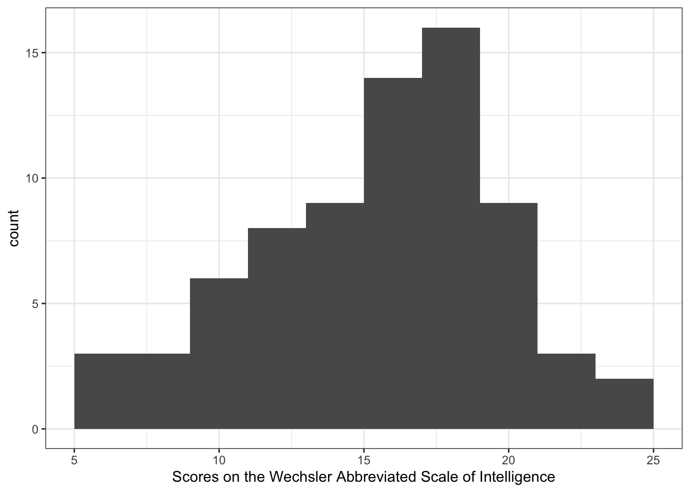

2 Data visualization
2.1 Aims
In writing this chapter, I have two aims.
- The first aim for this chapter is to expose students to an outline summary of some key ideas and techniques for data visualization in psychological science.
There is an extensive experimental and theoretical literature concerning data visualization, what choices we can or should make, and how these choices have more or less impact, in different circumstances or for different audiences. Here, we can only give you a flavour of the on-going discussion. If you are interested, you can follow-up the references in the cited articles. But, using this chapter, I hope that you will gain a sense of the reasons how or why we may choose to do different things when we produce visualizations.
- The second aim is to provide materials, and to show visualizations, to raise an awareness of what results come from making different choices. This is because we hope to encourage students to make choices based on reasons and it is hard to know what choices count without first seeing what the results might look like.
In my experience, knowing that there are choices is the first step. In proprietary software packages like Excel and SPSS there are plenty of choices but these are limited by the menu systems to certain combinations of elements. Here, in using R to produce visualizations, there is much more freedom, and much more capacity to control what a plot shows and how it looks, but knowing where to start has to begin with seeing examples of what some of the choices result in.
At the end of the chapter, I highlight some resources you can use in independent learning for further development, see Section 2.9.
So, we are aiming to (1.) start to build insight into the choices we make and (2.) provide resources to enable making those choices in data visualization.
2.2 Why data visualization matters
Data visualization is important. Building skills in visualization matters to you because, even if you do not go on to professional work in which you produce visualizations you will certainly be working in fields in which you need to work with, or read or evaluate, visualizations.
You have already been doing this: our cultural or visual environment is awash in visualizations, from weather maps to charts on the television news. It will empower you if you know a bit about how or why these visualizations are produced in the ways that they are produced. That is a complex development trajectory but we can get started here.
In the context of the research report exercise, see Section 7.2.3.1, I mention data visualization in relation to stages of the data analysis pipeline or workflow. But the reality is that, most of the time, visualization is useful and used at every stage of data analysis workflow.
2.3 Three kinds of honesty
I write this chapter with three kinds of honesty in mind.
- I will expose some of the process involved in thinking about and preparing for the production of plots.
- I can assure you that when a professional data analysis worker produces plots in R they will be looking for information about what to do, and how to do it, online. I will provide links to the information I used, when I wrote this chapter, in order to figure out the coding to produce the plots.
- I won’t pretend that I got the plots “right first time” or that I know all the coding steps by memory. Neither is true for me and they would not be true for most professionals if they were to write a chapter like this. Looking things up online is something we all do so showing you where the information can be found will help you grow your skills.
- I will show how we often prepare for the production of plots by processing the data that we must use to inform the plots.
- We almost always have to process the data we collected or gathered together from our exerimental work or our observations.
- In this chapter, some of the coding steps I will outline are done in advance of producing a plot, to give the plotting code something to work with.
- Knowing about these processing steps will ensure you have more flexibility or power in getting your plots ready.
- I am going to expose variation, as often as I can, in observations.
- We typically collect data about or from people, about their responses to things we may present (stimuli) or, given tasks, under different conditions, or concerning individual differences on an array of dimensions.
- Sources of variation will be everywhere in our data, even though we often work with statistical analyses (like the t-test) that focus our attention on the average participant or the average response.
- Modern analysis methods (like mixed-effects models) enable us to account for sources of variation systematically, so it is good to begin thinking about, say, how people vary in their response to different experimental conditions from early in your development.
2.4 Our approach: tidyverse
The approach we will take is to focus on step-by-step guides to coding. I will show plots and I will walk through the coding steps, explaining my reasons for the choices I make.
We will be working with plotting functions like ggplot() provided in libraries like ggplot2 (Wickham, 2016) which is part of the tidyverse (Wickham, 2017) collection of libraries.
You can access information about the tidyverse collection here.
2.4.1 Grammar of graphics
The gg in ggplot stands for the “Grammar of Graphics”, and the ideas motivating the development of the ggplot2 library of functions are grounded in the ideas concerning the grammar of graphics, set out in the book of that name (Wilkinson, 2013).
What is helpful to us, here, is the insight that the code elements (and how they result in visual elements) can be identified as building blocks, or layers, that we can add and adjust piece by piece when we are producing a visualization.
A plot represents information and, critically, every time we write ggplot code we must specify somewhere the ways that our plot links data to something we see. In terms of ggplot, we specify aesthetic mappings using the aes() code to tell R what variables should be mapped e.g. to x-axis or y-axis location, to colour, or to group assignments. We then add elements to instruct R how to represent the aesthetic mappings as visual objects or attributes: geometric objects like a scatter of points geom_point() or a collection of bars geom_bar(); or visual features like colour, shape or size e.g. aes(colour = group). We can add visual elements in a series of layers, as shall see in the practical demonstrations of plot construction. We can adjust how scaling works. And we can add annotation, labels, and other elements to guide and inform the attention of the audience.
You can read more about mastering the grammar here.
2.4.2 Pipes
We know that (some of) you want to see more use of pipes (represented as %>% or |>) in coding. There will be plenty of pipes in this chapter.
In using pipes in the code, I am structuring the code so that it works — and is presented — in a sequence of steps. There are different ways to write code but I find this way easier to work with and to read and I think you will too.
Let’s take a small example:
sleepstudy %>%
group_by(Subject) %>%
summarise(average = mean(Reaction)) %>%
ggplot(aes(x = average)) +
geom_histogram()Here, we work through a series of steps:
sleepstudy %>%we first tell R we want to work with the dataset calledsleepstudyand the%>%pipe symbol at the end of the line tells R that we want it to pass that dataset on to the next step for what happens next.group_by(Subject) %>%tells R that we want it to do something, here, group the rows of data according to theSubject(participant identity) coding variable, and pass the grouped data on to the next step for what happens following.summarise(average = mean(Reaction)) %>%tells R to take the grouped variable and calculate a summary, the mean Reaction score, for each group of observations for each participant. The%>%pipe at the end of the line tells R to pass the summary dataset of mean Reaction scores on to the next process.ggplot(aes(x = average)) +tells R that we want it to take these summaryaverageReaction scores and make a plot out of them.geom_histogram()tells R that we want a histogram plot.
What you can see is that each line ending in a %> pipe passes something on to the next line. A following line takes the output of the process coded in the preceding line, and works with it.
Each step is executed in turn, in strict sequence. This means that if I delete line 3 summarise(average = mean(Reaction)) %>% then the following lines cannot work because the ggplot() function will be looking for a variable average that does not yet exist.
- You can see that in the data processing part of the code, successive steps in data processing end in a pipe
%>%. - In contrast, successive steps of the plotting code add
ggplotelements line by line with each line (except the last) ending in a+.
Notice that none of the processing steps actually changes the dataset called sleepstudy. The results of the process exist and can be used only within the sequence of steps that I have coded. If you want to keep the results of processing steps, you need to assign an object name to hold them, and I show how to do this, in the following.
You can read a clear explanation of pipes here.
You can use the code you see:
- Each chunk of code is highlighted in the chapter.
- If you hover a cursor over the highlighted code a little clipboard symbol appears in the top right of the code chunk.
- Click on the clipboard symbol to copy the code, paste it into your own R-Studio instance.
- Then experiment: try out things like removing or commmenting out lines, or changing lines, to see what effect that has.
- Breaking things, or changing things, helps to show what each bit of code does.
2.5 Key ideas
Data visualization is not really about coding, as about thinking.
- What are our goals?
- Why do we make some choices instead of others?
2.5.1 Goals
Gelman & Unwin (2013) outline the goals we may contemplate when we produce or evaluate visual data displays. In general, they argue, we are doing one or both of two things.
- Discovery
- Communication
In practice, this may involve the following (I paraphrase them, here).
- Discovery goals
- Getting a sense of what is in a dataset, checking assumptions, confirming expectations, and looking for distinct patterns.
- Making sense of the scale and complexity of the dataset.
- Exploring the data to reveal unexpected aspects. As we will see, using small multiples (grids of plots) can often help with this.
- Communication goals
- We communicate about our data to ourselves and to others. The process of constructing and evaluating a plot is often one way we speak to ourselves about own data, developing an understanding of what we have got. Once we have done this for ourselves, we can better figure out how to do it to benefit the understanding of an audience.
- We often use a plot to tell a story: the story of our study, our data, or our insight and how we get to it.
- We can use visualizations to attract attention and stimulate interest. Often, in presenting data to an audience through a talk or a report we need to use effective visualizations to ensure we get attention and that we locate the attention of our audience in the right places.
2.5.2 Psychological science of data visualization
You will see a rich variety of data visualizations in media and in the research literature. You will know that some choices, in the production of those visualizations, appear to work better than others.
Some of the reasons why some choices work better will relate to what we can understand in terms of the psychological science of how visual data communication works. A useful recent review of relevant research is presented by Franconeri et al. (2021).
Franconeri et al. (2021) provide a reason for working on visualizations: they allow us humans to process an array of information at once, often faster than if we were reading about the information, bit by bit. Effective visualization, then, is about harnessing the power of the human visual system, or visual cognition, for quick, efficient, information processing. Critically for science, in addition, visualizations can be more effective for discovering or communicating the critical features of data than summary statistics, as we shall see.
In producing visualizations, we often work with a vocabulary or palette of objects or visual elements. Franconeri et al. (2021) discuss how visualizations rely on visual channels to transform numbers into images that we can process visually.
- Dot plots and scatterplots represent values as position.
- Bar graphs represent values as position (the heights of the tops of bars) but also as lengths.
- Angles are presented when we connect points to form a line, allowing us to encode the differences between points.
- Intensity can be presented through variation in luminance contrast or colour saturation.
These channels can be ordered by how precisely they have been found to communicate different numeric values to the viewer. Your audience may more accurately perceive the difference between two quantities if you communicate that difference through the difference in the location of two points than if you ask your audience to compare the angles of two lines or the intensity of two colour spots.
In constructing data visualizations, we often work with conventions, established through common practice in a research tradition. For example, if you are producing a scatterplot, then most of the time your audience will expect to see the outcome (or dependent variable) represented by the vertical height (on the y-axis) of points. And your audience will expect that higher points represent larger quantities of the y-axis variable.
In constructing visualizations, we need to be aware of the cognitive work that we require the audience to do. Comparisons are harder, requiring more processing and imposing more load on working memory. You can help your reader by guiding their attention, by grouping or ordering visual elements to identify the most important comparisons. We can vary colour and shape to group or distinguish visual elements. We can add annotation or elements like lines or arrows to guide attention.
Visualizations are presented in context, whether in presentations or in reports. This context should be provided, by you the producer, with the intention to support the communication of your key messages. A visual representation, a plot, will be presented with a title, maybe a title note, maybe with annotation in the plot, and maybe with accompanying text. You should use these textual elements to lead your audience, to help them make sense of what they are looking at.
The diversity of audiences means that we should habitually add alt text for data visualizations to help those who use screen readers by providing a summary description of what images show. This chapter has been written using Quarto and rendered to .html with alt text included along with all images. Please do let me know if you are using a screen reader and the alt text description is or is not so helpful.
You can read a helpful explanation of alt text here.
If you use colour in images then we should use colour bind colour palettes.
You can read about using colour blind palettes here or here.
In the following practical exercises, we work with many of the insights in our construction of visualizations.
2.6 A quick start
We can get started before we understand in depth the key ideas or the coding steps. This will help to show where we are going. We will work with the sleepstudy dataset.
I will model the process, to give you an example workflow:
- the data, where they come from — what we can find out;
- how we approach the data — what we expect to see;
- how we visualize the data — discovery, communication.
2.6.1 Sleepstudy data
When we work with R, we usually work with functions like ggplot() provided in libraries like ggplot2 (Wickham, 2016). These libraries typically provide not only functions but also datasets that we can use for demonstration and learning.
The lme4 library (Bates et al., 2015) provides the sleepstudy dataset and we will take a look at these data to offer a taste of what we can learn to do. Usually, information about the R libraries we use will be located on the Comprehensive R Archive Network (CRAN) web pages, and we can find the technical reference information for lme4 in the CRAN reference manual for the library, where we see that the sleepstudy data are from a study reported by (Belenky et al., 2003). The manual says that the sleepstudy dataset comprises:
A data frame with 180 observations on the following 3 variables. [1.] Reaction – Average reaction time (ms) [2.] Days – Number of days of sleep deprivation [3.] Subject – Subject number on which the observation was made.
We can take a look at the first few rows of the dataset.
sleepstudy %>%
head(n = 4) Reaction Days Subject
1 249.5600 0 308
2 258.7047 1 308
3 250.8006 2 308
4 321.4398 3 308What we are looking at are:
The average reaction time per day (in milliseconds) for subjects in a sleep deprivation study. Days 0-1 were adaptation and training (T1/T2), day 2 was baseline (B); sleep deprivation started after day 2.
The abstract for Belenky et al. (2003) tells us that participants were deprived of sleep and the impact of relative deprivation was tested using a cognitive vigilance task for which the reaction times of responses were recorded.
So, we can expect to find:
- A set of rows corresponding to multiple observations for each participant (
Subject) - A reaction time value for each participant (
Reaction) - Recorded on each
Day
2.6.2 Discovery and communication
In data analysis work, we often begin with the objective to understand the structure or the nature of the data we are working with.
You can call this the discovery phase:
- what have we got?
- does it match our expectations?
If these are reaction time data (collected in an cognitive experiment) do they look like cognitive reaction time data should look? We would expect to see a skewed distribution of observed reaction times distributed around an average located somewhere in the range 200-700ms.
Figure 2.2 represents the distribution of reaction times in the sleepstudy dataset.
I provide notes on the code steps that result in the plot. Click on the Notes tab to see them. Later, I will discuss some of these elements.
sleepstudy %>%
ggplot(aes(x = Reaction)) +
geom_histogram(binwidth = 15) +
geom_vline(xintercept = mean(sleepstudy$Reaction),
colour = "red", linetype = 'dashed', size = 1.5) +
annotate("text", x = 370, y =20,
colour = "red",
label = "Average value shown in red") +
theme_bw()
sleepstudy reaction time dataThe plotting code pipes the data into the plotting code steps to produce the plot. You can see some elements that will be familiar to you and some new elements.
sleepstudy %>%
ggplot(aes(x = Reaction)) +
geom_histogram(binwidth = 15) +
geom_vline(xintercept = mean(sleepstudy$Reaction),
colour = "red", linetype = 'dashed', size = 1.5) +
annotate("text", x = 370, y =20,
colour = "red",
label = "Average value shown in red") +
theme_bw()Let’s go through the code step-by-step:
sleepstudy %>%asks R to take thesleepstudydataset and%>%pipe it to the next steps for processing.ggplot(aes(x = Reaction)) +takes thesleepstudydata and asks R to use theggplot()function to produce a plot.aes(x = Reaction)tells R that in the plot we want it to map theReactionvariable values to locations on the x-axis: this is the aesthetic mapping.geom_histogram(binwidth = 15) +tells R to produce a histogram then add a step.geom_vline(...) +tells R we want to draw vertical line.xintercept = mean(sleepstudy$Reaction), ...tells R to draw the vertical line at the mean value of the variableReactionin thesleepstudydataset.colour = "red", linetype = 'dashed', size = 1.5tells R we want the vertical line to be red, dashed and 1.5 times the usual size.annotate("text", ...)tells R we want to add a text note.x = 370, y =20, ...tells R we want the note added at the x,y coordinates given.colour = "red", ..;and we want the text in red....label = "Average value shown in red") +tells R we want the text note to say that this is where the average is.theme_bw()lastly, we change the theme.
Figure 2.2 shows a distribution of reaction times, ranging from about 200ms to 500ms. The distribution has a peak around 300ms. The location of the mean is shown with a dashed red line. The distribution includes a long tail of longer times. This is pretty much what we would expect to see.
We may wish to communicate the information we gain through using this histogram, in a presentation or in a report.
2.6.3 Discovery and communication
Let us imagine that it is our study. (Here, we shall not concern ourselves too much — with apologies — with understanding what the original study authors actually did.)
If we are looking at the impact of sleep deprivation on cognitive performance, we might predict that reaction times got longer (responses slowed) as the study progressed. Is that what we see?
To examine the association between two variables, we often use scatterplots. Figure 2.3 is a scatterplot indicating the possible association between reaction time and days in the sleepstudy data. Points are ordered on x-axis from 0 to 9 days, on y-axis from 200 to 500 ms reaction time.
I provide notes on the code steps that result in the plot. Click on the Notes tab to see them. Later, I will discuss some of these elements.
sleepstudy %>%
ggplot(aes(x = Days, y = Reaction)) +
geom_point(size = 1.5, alpha = .5) +
scale_x_continuous(breaks = c(0, 3, 6, 9)) +
theme_bw()
sleepstudy dataNotice the numbered steps in producing this plot.
- Name the dataset: the dataset is called
sleepstudyin thelme4library which makes it available therefore we use this name to specify it. sleepstudy %>%uses the%>%pipe operator to pass this dataset toggplot()to work with, in creating the plot. Becauseggplot()now knows about thesleepstudydata, we can next specify what aesthetic mappings we need to use.ggplot(aes(x = Days, y = Reaction)) +tells R that we want to mapDaysinformation to x-axis position andReaction(response time) information to y-axis position.geom_point() +tells R that we want to locate points – creating a scatterplot – at the paired x-axis and y-xis coordinates.scale_x_continuous(breaks = c(0, 3, 6, 9)) +is new: we tell R that we want the x-axis tick labels – the numbers R shows as labels on the x-axis – at the values 0, 3, 6, 9 only.theme_bw()requires R to make the plot background white and the foreground plot elements black.
You can find more information on scale_ functions in the ggplot2 reference information.
https://ggplot2.tidyverse.org/reference/scale_continuous.html
The plot suggests that reaction time increases with increasing number of days.
In producing this plot, we are both (1.) engaged in discovery and, potentially, (2.) able to do communication.
- Discovery: is the relation between variables what we should expect, given our assumptions?
- Communication: to ourselves and others, what relation do we observe, given our sample?
At this time, we have used and discussed scatterplots before, why we use them, how we write code to produce them, and how we read them.
With two additional steps we can significantly increase the power of the visualization. Figure 2.4 is a grid of scatterplots indicating the possible association between reaction time and days separately for each participant.
Again, I hide an explanation of the coding steps in the Notes tab: the interested reader can click on the tab to view the step-by-step guide to what is happening.
sleepstudy %>%
group_by(Subject) %>%
mutate(average = mean(Reaction)) %>%
ungroup() %>%
mutate(Subject = fct_reorder(Subject, average)) %>%
ggplot(aes(x = Days, y = Reaction)) +
geom_point() +
geom_line() +
scale_x_continuous(breaks = c(0, 3, 6, 9)) +
facet_wrap(~ Subject) +
theme_bw()
Notice the numbered steps in producing this plot.
You can see that the block of code combines data processing and data plotting steps. Let’s look at the data processing steps then the plotting steps in order.
First: why are we doing this? My aim is to produce a plot in which I show the association between Days and Reaction for each Subject individually. I suspect that the association between Days and Reaction may be stronger – so the trend will be steeper – for participants who are slower overall. I suspect this because, given experience, I know that slower, less accurate, participants tend to show larger effects.
So: in order to get a grid of plots, one plot for each Subject, in order of the average Reaction for each individual Subject, I need to first calculate the average Reaction then order the dataset rows by those averages. I do that in steps, using pipes to feed information from one step to the next step, as follows.
sleepstudy %>%tells R what data I want to use, and pipe it to the next step.group_by(Subject)tells R I want it to work with data (rows) grouped bySubjectidentity code,%>%piping the grouped form of the data forward to the next stepmutate(average = mean(Reaction))usesmutate()to create a new variableaveragewhich I calculate as themean()ofReaction, piping the data with this additional variable%>%forward to the next step.ungroup() %>%tells R I want it to go back to working with the data in rows not grouped rows, and pipe the now ungrouped form of the data to the next step.mutate(Subject = fct_reorder(Subject, average))tells R I want it to sort the rows of the wholesleepstudydataset in order, moving groups of rows identified bySubjectso that data forSubjectcodes associated with faster times are located near the top of the dataset.
These data, ordered by Subject by the average Reaction for each participant, are then %>% piped to ggplot to create a plot.
ggplot(aes(x = Days, y = Reaction)) +specifies the aesthetic mappings, as before.geom_point() +asks R to locate points at the x-axis, y-axis coordinates, creating a scatterplot, as before.geom_line() +is new: I want R to connect the points, showing the trend in the association betweenDaysandReactionfor each person.scale_x_continuous(breaks = c(0, 3, 6, 9)) +fixes the x-axis labels, as before.facet_wrap(~ Subject) +is the big new step: I ask R to plot a separate scatterplot for the data for each individualSubject.
You can see more information about facetting here:
https://ggplot2.tidyverse.org/reference/facet_wrap.html
In short, with the facet_wrap(~ .) function, we are asking R to subset the data by a grouping variable, specified (~ .) by replacing the dot with the name of the variable.
Notice that I use %>% pipes to move the data processing forward, step by step. But I use + to add plot elements, layer by layer.
Figure Figure 2.4 is a grid or lattice of scatterplots revealing how the possible association between reaction time and days varies quite substantially between the participants in the sleepstudy data. Most plots indicate that reaction time increases with increasing number of days. However, different participants show this trend to differing extents.
What are the two additions I made to the conventional scatterplot code?
- I calculated the average reaction time per participant, and I ordered the data by those averages.
- I facetted the plots, breaking them out into separate scatterplots per participant.
Why would you do this? Variation between people or groups, in effects or in average outcomes, are often to be found in psychological data (Vasishth & Gelman, 2021). The variation between people that we see in these data — in the average response reaction time, and in how days affects times — would motivate the use of linear mixed-effects models to analyze the way that sleep patterns affect responses in the sleep study (Pinheiro & Bates, 2000).
The data processing and plotting functions in the tidyverse collection of libraries enable us to discover and to communicate variation in behaviours that should strengthen our and others’ scientific understanding.
2.6.4 Summary: Quick start lessons
What we have seen, so far, is that we can make dramatic changes to the appearance of visualizations (e.g., through faceting) and also that we can exert fine control over the details (e.g., adjusting scale labels). What we need to stop and consider are what we want to do (and why), in what order.
We have seen how we can feed a data process into a plot to first prepare then produce the plot in a sequence of steps. In processing the data, we can take some original data and extract or calculate information that we can use for our plotting e.g. calculating the mean of a distribution in order to then highlight where that mean is located.
We have also seen the use of plots, and the editing of their appearance, to represent information visually. We can verbalize the thought process behind the production of these plots through a series of questions.
- Are we looking at the distribution of one variable (if yes: consider a histogram) or are we comparing the distributions of two or more variables (if yes: consider a scatterplot)?
- Is there a salient feature of the plot we want to draw the attention of the audience to? We can add a visual element (like a line) and annotation text to guide the audience.
- Are we interested in variation between sub-sets of the data? We can facet the plot to examine variation between sub-sets (facets) enabling the comparison of trends.
2.7 A practical guide to visualization ideas
In this guide, we illustrate some of the ideas about visualization we discussed at the start, working with practical coding examples. We will be working with real data from a published research project. We are going to focus the practical coding examples on the data collected for the analysis reported by Ricketts et al. (2021).
2.7.1 Set up for coding
To do our practical work, we will need functions and data. We get these at the start of our workflow.
2.7.1.1 Get libraries
We are going to need the lme4, patchwork, psych and tidyverse libraries of functions and data.
library(ggeffects)
library(patchwork)
library(psych)
library(tidyverse)2.7.1.2 Get the data
You can access the data we are going to use in two different ways.
2.7.1.2.1 Get the data from project repositories
The data associated with both (Ricketts et al., 2021) and (Rodríguez-Ferreiro et al., 2020) are freely available through project repositories on the Open Science Framework web pages.
You can get the data from the Ricketts et al. (2021) paper through the repository located here.
You can get the data from the Rodríguez-Ferreiro et al. (2020) paper through the repository located here.
These data are associated with full explanations of data collection methods, materials, data processing and data analysis code. You can review the papers and the repository material guides for further information.
In the following, I am going to abstract summary information about the Ricketts et al. (2021) study and data. I shall leave you to do the same for the Rodríguez-Ferreiro et al. (2020) study.
2.7.1.2.2 Get the data through a downloadable archive
Download the data-visualization.zip files folder and upload the files to RStudio Server.
The folder includes the Ricketts et al. (2021) data files:
concurrent.orth_2020-08-11.csvconcurrent.sem_2020-08-11.csvlong.orth_2020-08-11.csvlong.sem_2020-08-11.csv
The folder also includes the Rodríguez-Ferreiro et al. (2020) data files:
PrimDir-111019_English.csvPrimInd-111019_English.csv
- These data files are collected together in a folder for download, for your convenience, but the version of record for the data for each study comprise the files located on the OSF repositories associated with the original articles.
2.7.2 Information about the Ricketts study and the datasets
Ricketts et al. (2021) conducted an investigation of word learning in school-aged children. They taught children 16 novel words in a study with a 2 x 2 factorial design. In this investigation, they tested whether word learning is helped by presenting targets for word learning with their spellings, and whether learning is helped by telling children that they would benefit from the presence of those spellings.
The presence of orthography (the word spelling) was manipulated within participants (orthography absent vs. orthography present): for all children, eight of the words were taught with orthography present and eight with orthography absent. Instructions (incidental vs. explicit) were manipulated between participants such that children in the explicit condition were alerted to the presence of orthography whereas children in the incidental condition were not.
A pre-test was conducted to establish participants’ knowledge of the stimuli. Then, each child was seen for three 45-minute sessions to complete training (Sessions 1 and 2) and post-tests (Session 3). Ricketts et al. (2021) completed two studies: Study 1 and Study 2. All children, in both studies 1 and 2 completed the Session 3 post-tests.
In Study 1, longitudinal post-test data were collected because children were tested at two time points. Children were administered post-tests in Session 3, as noted: Time 1. Post-tests were then re-administered approximately eight months later at Time 2 (\(M = 241.58\) days from Session 3, \(SD = 6.10\)). In Study 2, the Study 1 sample was combined with an older sample of children. The additional Study 2 children were not tested at Time 2, and the analysis of Study 2 data did not incorporate test time as a factor.
The outcome data for both studies consisted of performance on post-tests.
The semantic post-test assessed knowledge for the meanings of newly trained words using a dynamic or sequential testing approach. I will not explain this approach in more detail, here, because the practical visualization exercises focus on the orthographic knowledge (spelling knowledge) post-test, explained next.
The orthographic post-test was included to ascertain the extent of orthographic knowledge after training. Children were asked to spell each word to dictation and spelling productions were transcribed for scoring. Responses were scored using a Levenshtein distance measure indexing the number of letter deletions, insertions and substitutions that distinguish between the target and child’s response. The maximum score is 0, with higher scores indicating less accurate responses.
For the Study 1 analysis, the files are:
long.orth_2020-08-11.csvlong.sem_2020-08-11.csv
Where long indicates the longitudinal nature of the data-set.
For the Study 2 analysis, the files are:
concurrent.orth_2020-08-11.csvconcurrent.sem_2020-08-11.csv
Where concurrent indicates the inclusion of concurrent (younger and older) child participant samples.
Each column in each data-set corresponds to a variable and each row corresponds to an observation (i.e., the data are tidy). Because the design of the study involves the collection of repeated observations, the data can be understood to be in a long format.
Each child was asked to respond to 16 words and, for each of the 16 words, we collected post-test responses from multiple children. All words were presented to all children.
We explain what you will find when you inspect the .csv files, next.
2.7.2.1 Data – variables and value coding
The variables included in .csv files are listed, following, with information about value coding or calculation.
Participant— Participant identity codes were used to anonymize participation. Children included in studies 1 and 2 – participants in the longitudinal data collection – were coded “EOF[number]”. Children included in Study 2 only (i.e., the older, additional, sample) were coded “ND[number]”.Time— Test time was coded 1 (time 1) or 2 (time 2). For the Study 1 longitudinal data, it can be seen that each participant identity code is associated with observations taken at test times 1 and 2.Study— Observations taken for children included in studies 1 and 2 – participants in the longitudinal data collection – were coded “Study1&2”. Children included in Study 2 only (i.e., the older, additional, sample) were coded “Study2”.Instructions— Variable coding for whether participants undertook training in the explicit or incidental conditions.Version— Experiment administration codingWord— Letter string values show the words presented as stimuli to children.Consistency_H— Calculated orthography-to-phonology consistency value for each word.Orthography— Variable coding for whether participants had seen a word in training in the orthography absent or present conditions.Measure— Variable coding for the post-test measure: Sem_all if the semantic post-test; Orth_sp if the orthographic post-test.Score— Variable coding for response category.
For the semantic (sequential or dynamic) post-test, responses were scored as corresponding to:
- 3 – correct response in the definition task
- 2 – correct response in the cued definition task
- 1 – correct response in the recognition task
- 0 – if the item wasn’t correctly defined or recognised
For the orthographic post-test, responses were scored as:
- 1 – correct, if the target spelling was produced in full
- 0 – incorrect
However, the analysis reported by Ricketts et al. (2021) focused on the more sensitive Levenshtein distance measure (see following).
WASImRS— Raw score – Matrix Reasoning subtest of the Wechsler Abbreviated Scale of IntelligenceTOWREsweRS— Raw score – Sight Word Efficiency (SWE) subtest of the Test of Word Reading Efficiency; number of words read correctly in 45 secondsTOWREpdeRS— Raw score – Phonemic Decoding Efficiency (PDE) subtest of the Test of Word Reading Efficiency; number of nonwords read correctly in 45 secondsCC2regRS— Raw score – Castles and Coltheart Test 2; number of regular words read correctlyCC2irregRS— Raw score – Castles and Coltheart Test 2; number of irregular words read correctlyCC2nwRS— Raw score – Castles and Coltheart Test 2; number of nonwords read correctlyWASIvRS— Raw score – vocabulary knowledge indexed by the Vocabulary subtest of the WASI-IIBPVSRS— Raw score – vocabulary knowledge indexed by the British Picture Vocabulary Scale – Third EditionSpelling.transcription— Transcription of the spelling response produced by children in the orthographic post-testLevenshtein.Score— Children were asked to spell each word to dictation and spelling productions were transcribed for scoring. Responses were scored using a Levenshtein distance measure indexing the number of letter deletions, insertions and substitutions that distinguish between the target and child’s response. For example, the response ‘epegram’ for target ‘epigram’ attracts a Levenshtein score of 1 (one substitution). Thus, this score gives credit for partially correct responses, as well as entirely correct responses. The maximum score is 0, with higher scores indicating less accurate responses.
(Notice that, for the sake of brevity, I do not list the z_ variables but these are explained in the study OSF repository materials.)
Levenshtein distance scores are higher if a child makes more errors in producing the letters in a spelling response.
- This means that if we want to see what factors help a child to learn a word, including its spelling, then we want to see that helpful factors are associated with lower Levenshtein scores.
To demonstrate some of the processes we can enact to process and visualize data, and some of the benefits of doing so, we are going to work with the concurrent.orth_2020-08-11.csv dataset. These are data corresponding to the Ricketts et al. (2021) Study 2. concurrent refers to the analysis (a concurrent comparison) of data from younger and older children.
2.7.3 Read the data into R
Assuming you have downloaded the data files, we first read the dataset into the R environment: concurrent.orth_2020-08-11.csv. We do the data read in a bit differently than you have seen it done before; we will come back to what is going on (in Section 2.7.4.1).
conc.orth <- read_csv("concurrent.orth_2020-08-11.csv",
col_types = cols(
Participant = col_factor(),
Time = col_factor(),
Study = col_factor(),
Instructions = col_factor(),
Version = col_factor(),
Word = col_factor(),
Orthography = col_factor(),
Measure = col_factor(),
Spelling.transcription = col_factor()
))We can inspect these data using summary().
summary(conc.orth) Participant Time Study Instructions Version
EOF001 : 16 1:1167 Study1&2:655 explicit :592 a:543
EOF002 : 16 Study2 :512 incidental:575 b:624
EOF004 : 16
EOF006 : 16
EOF007 : 16
EOF008 : 16
(Other):1071
Word Consistency_H Orthography Measure
Accolade : 73 Min. :0.9048 absent :583 Orth_sp:1167
Cataclysm : 73 1st Qu.:1.5043 present:584
Contrition: 73 Median :1.9142
Debacle : 73 Mean :2.3253
Dormancy : 73 3rd Qu.:3.0436
Epigram : 73 Max. :3.9681
(Other) :729
Score WASImRS TOWREsweRS TOWREpdeRS CC2regRS
Min. :0.0000 Min. : 5 Min. :51.00 Min. :19.00 Min. :28.00
1st Qu.:0.0000 1st Qu.:13 1st Qu.:69.00 1st Qu.:35.00 1st Qu.:36.00
Median :0.0000 Median :17 Median :74.00 Median :41.00 Median :38.00
Mean :0.2913 Mean :16 Mean :74.23 Mean :41.59 Mean :36.91
3rd Qu.:1.0000 3rd Qu.:19 3rd Qu.:80.00 3rd Qu.:50.00 3rd Qu.:39.00
Max. :1.0000 Max. :25 Max. :93.00 Max. :59.00 Max. :40.00
CC2irregRS CC2nwRS WASIvRS BPVSRS
Min. :17.00 Min. :13.00 Min. :16.00 Min. :103.0
1st Qu.:23.00 1st Qu.:29.00 1st Qu.:25.00 1st Qu.:119.0
Median :25.00 Median :33.00 Median :29.00 Median :133.0
Mean :25.24 Mean :32.01 Mean :29.12 Mean :130.9
3rd Qu.:27.00 3rd Qu.:37.00 3rd Qu.:33.00 3rd Qu.:142.0
Max. :35.00 Max. :40.00 Max. :39.00 Max. :158.0
Spelling.transcription Levenshtein.Score zTOWREsweRS zTOWREpdeRS
Epigram : 57 Min. :0.000 Min. :-2.67807 Min. :-2.33900
Platitude : 43 1st Qu.:0.000 1st Qu.:-0.60283 1st Qu.:-0.68243
Contrition: 42 Median :1.000 Median :-0.02638 Median :-0.06122
fracar : 39 Mean :1.374 Mean : 0.00000 Mean : 0.00000
Nonentity : 39 3rd Qu.:2.000 3rd Qu.: 0.66537 3rd Qu.: 0.87061
raconter : 35 Max. :7.000 Max. : 2.16415 Max. : 1.80243
(Other) :912
zCC2regRS zCC2irregRS zCC2nwRS zWASIvRS
Min. :-3.3636 Min. :-2.22727 Min. :-3.1053 Min. :-2.63031
1st Qu.:-0.3435 1st Qu.:-0.60461 1st Qu.:-0.4920 1st Qu.:-0.82633
Median : 0.4115 Median :-0.06373 Median : 0.1614 Median :-0.02456
Mean : 0.0000 Mean : 0.00000 Mean : 0.0000 Mean : 0.00000
3rd Qu.: 0.7890 3rd Qu.: 0.47716 3rd Qu.: 0.8147 3rd Qu.: 0.77721
Max. : 1.1665 Max. : 2.64070 Max. : 1.3047 Max. : 1.97986
zBPVSRS mean_z_vocab mean_z_read zConsistency_H
Min. :-1.9946 Min. :-2.06910 Min. :-2.39045 Min. :-1.4153
1st Qu.:-0.8495 1st Qu.:-0.85941 1st Qu.:-0.43321 1st Qu.:-0.8181
Median : 0.1525 Median :-0.01483 Median : 0.08829 Median :-0.4096
Mean : 0.0000 Mean : 0.00000 Mean : 0.00000 Mean : 0.0000
3rd Qu.: 0.7967 3rd Qu.: 0.72964 3rd Qu.: 0.68438 3rd Qu.: 0.7157
Max. : 1.9418 Max. : 1.96083 Max. : 1.52690 Max. : 1.6368
You should notice one key bit of information in the summary. Focus on the summary for what is in the Participant column. You can see that we have a number of participants in this dataset, listed by Participant identity code in the summary() view e.g. EOF001. For each participant, we have 16 rows of data.
When we ask R for a summary of a nominal variable or factor it will show us the levels of each factor (i.e., each category or class of objects encoded by the categorical variable), and a count for the number of observations for each level.
Take a look at the rows of data for EOF001.
| Participant | Time | Study | Instructions | Version | Word | Consistency_H | Orthography | Measure | Score | WASImRS | TOWREsweRS | TOWREpdeRS | CC2regRS | CC2irregRS | CC2nwRS | WASIvRS | BPVSRS | Spelling.transcription | Levenshtein.Score | zTOWREsweRS | zTOWREpdeRS | zCC2regRS | zCC2irregRS | zCC2nwRS | zWASIvRS | zBPVSRS | mean_z_vocab | mean_z_read | zConsistency_H |
|---|---|---|---|---|---|---|---|---|---|---|---|---|---|---|---|---|---|---|---|---|---|---|---|---|---|---|---|---|---|
| EOF001 | 1 | Study1&2 | explicit | a | Accolade | 1.9142393 | absent | Orth_sp | 0 | 15 | 62 | 33 | 39 | 27 | 30 | 26 | 126 | acalade | 2 | -1.409869 | -0.8895032 | 0.7889916 | 0.4771563 | -0.3286222 | -0.6258886 | -0.3484719 | -0.4871803 | -0.2723693 | -0.4095955 |
| EOF001 | 1 | Study1&2 | explicit | a | Cataclysm | 3.5060075 | present | Orth_sp | 1 | 15 | 62 | 33 | 39 | 27 | 30 | 26 | 126 | Cataclysm | 0 | -1.409869 | -0.8895032 | 0.7889916 | 0.4771563 | -0.3286222 | -0.6258886 | -0.3484719 | -0.4871803 | -0.2723693 | 1.1763372 |
| EOF001 | 1 | Study1&2 | explicit | a | Contrition | 1.7486898 | absent | Orth_sp | 1 | 15 | 62 | 33 | 39 | 27 | 30 | 26 | 126 | Contrition | 0 | -1.409869 | -0.8895032 | 0.7889916 | 0.4771563 | -0.3286222 | -0.6258886 | -0.3484719 | -0.4871803 | -0.2723693 | -0.5745381 |
| EOF001 | 1 | Study1&2 | explicit | a | Debacle | 2.9008386 | present | Orth_sp | 0 | 15 | 62 | 33 | 39 | 27 | 30 | 26 | 126 | dibarcle | 2 | -1.409869 | -0.8895032 | 0.7889916 | 0.4771563 | -0.3286222 | -0.6258886 | -0.3484719 | -0.4871803 | -0.2723693 | 0.5733869 |
| EOF001 | 1 | Study1&2 | explicit | a | Dormancy | 1.6263089 | absent | Orth_sp | 0 | 15 | 62 | 33 | 39 | 27 | 30 | 26 | 126 | doormensy | 3 | -1.409869 | -0.8895032 | 0.7889916 | 0.4771563 | -0.3286222 | -0.6258886 | -0.3484719 | -0.4871803 | -0.2723693 | -0.6964704 |
| EOF001 | 1 | Study1&2 | explicit | a | Epigram | 1.3822337 | present | Orth_sp | 1 | 15 | 62 | 33 | 39 | 27 | 30 | 26 | 126 | Epigram | 0 | -1.409869 | -0.8895032 | 0.7889916 | 0.4771563 | -0.3286222 | -0.6258886 | -0.3484719 | -0.4871803 | -0.2723693 | -0.9396508 |
| EOF001 | 1 | Study1&2 | explicit | a | Foible | 2.7051987 | present | Orth_sp | 1 | 15 | 62 | 33 | 39 | 27 | 30 | 26 | 126 | Foible | 0 | -1.409869 | -0.8895032 | 0.7889916 | 0.4771563 | -0.3286222 | -0.6258886 | -0.3484719 | -0.4871803 | -0.2723693 | 0.3784641 |
| EOF001 | 1 | Study1&2 | explicit | a | Fracas | 3.1443345 | absent | Orth_sp | 0 | 15 | 62 | 33 | 39 | 27 | 30 | 26 | 126 | fracar | 1 | -1.409869 | -0.8895032 | 0.7889916 | 0.4771563 | -0.3286222 | -0.6258886 | -0.3484719 | -0.4871803 | -0.2723693 | 0.8159901 |
| EOF001 | 1 | Study1&2 | explicit | a | Lassitude | 0.9048202 | present | Orth_sp | 0 | 15 | 62 | 33 | 39 | 27 | 30 | 26 | 126 | lacitude | 2 | -1.409869 | -0.8895032 | 0.7889916 | 0.4771563 | -0.3286222 | -0.6258886 | -0.3484719 | -0.4871803 | -0.2723693 | -1.4153141 |
| EOF001 | 1 | Study1&2 | explicit | a | Luminary | 1.0985931 | absent | Orth_sp | 0 | 15 | 62 | 33 | 39 | 27 | 30 | 26 | 126 | loomenery | 4 | -1.409869 | -0.8895032 | 0.7889916 | 0.4771563 | -0.3286222 | -0.6258886 | -0.3484719 | -0.4871803 | -0.2723693 | -1.2222516 |
| EOF001 | 1 | Study1&2 | explicit | a | Nonentity | 3.9681391 | absent | Orth_sp | 0 | 15 | 62 | 33 | 39 | 27 | 30 | 26 | 126 | nonenterty | 2 | -1.409869 | -0.8895032 | 0.7889916 | 0.4771563 | -0.3286222 | -0.6258886 | -0.3484719 | -0.4871803 | -0.2723693 | 1.6367746 |
| EOF001 | 1 | Study1&2 | explicit | a | Platitude | 0.9048202 | present | Orth_sp | 1 | 15 | 62 | 33 | 39 | 27 | 30 | 26 | 126 | Platitude | 0 | -1.409869 | -0.8895032 | 0.7889916 | 0.4771563 | -0.3286222 | -0.6258886 | -0.3484719 | -0.4871803 | -0.2723693 | -1.4153141 |
| EOF001 | 1 | Study1&2 | explicit | a | Propensity | 1.6861898 | absent | Orth_sp | 0 | 15 | 62 | 33 | 39 | 27 | 30 | 26 | 126 | propencity | 1 | -1.409869 | -0.8895032 | 0.7889916 | 0.4771563 | -0.3286222 | -0.6258886 | -0.3484719 | -0.4871803 | -0.2723693 | -0.6368090 |
| EOF001 | 1 | Study1&2 | explicit | a | Raconteur | 3.8245334 | absent | Orth_sp | 0 | 15 | 62 | 33 | 39 | 27 | 30 | 26 | 126 | raconter | 1 | -1.409869 | -0.8895032 | 0.7889916 | 0.4771563 | -0.3286222 | -0.6258886 | -0.3484719 | -0.4871803 | -0.2723693 | 1.4936954 |
| EOF001 | 1 | Study1&2 | explicit | a | Syncopation | 3.0436450 | present | Orth_sp | 0 | 15 | 62 | 33 | 39 | 27 | 30 | 26 | 126 | sincipation | 2 | -1.409869 | -0.8895032 | 0.7889916 | 0.4771563 | -0.3286222 | -0.6258886 | -0.3484719 | -0.4871803 | -0.2723693 | 0.7156697 |
| EOF001 | 1 | Study1&2 | explicit | a | Veracity | 2.8693837 | present | Orth_sp | 0 | 15 | 62 | 33 | 39 | 27 | 30 | 26 | 126 | varacity | 1 | -1.409869 | -0.8895032 | 0.7889916 | 0.4771563 | -0.3286222 | -0.6258886 | -0.3484719 | -0.4871803 | -0.2723693 | 0.5420473 |
You can see that for EOF001, as for every participant, we have information on the conditions under which we observed their responses (Instructions, Orthography), as well as information about the stimuli that we asked participants to respond to (e.g., Word, Consistency_H), information about the responses or outcomes we recorded (Measure, Score, Spelling.transcription, Levenshtein.Score), and information about the participants themselves (e.g., TOWREsweRS, TOWREpdeRS).
2.7.4 Process the data
We almost always need to process data in order to render the information ready for discovery or communication data visualization.
2.7.4.1 Specify column data types
You will have seen that data processing began when we first read the data in for use. Let’s go back and take a look at the code steps.
conc.orth <- read_csv("concurrent.orth_2020-08-11.csv",
col_types = cols(
Participant = col_factor(),
Time = col_factor(),
Study = col_factor(),
Instructions = col_factor(),
Version = col_factor(),
Word = col_factor(),
Orthography = col_factor(),
Measure = col_factor(),
Spelling.transcription = col_factor()
)
)The chunk of code is doing two things: first, we tell R what .csv file we want to read into the environment, and what we want to call the dataset; and then we tell R how we want to classify the data variable columns.
conc.orth <- read_csv("concurrent.orth_2020-08-11.csv"first reads the named.csvfile, creating an object I will callconc.orth: a dataset or tibble we can now work with in R.
- You have been using the
read.csv()function to read in data files. - The
read_csv()function is the more moderntidyverseform of the function you were introduced to. - Both versions work in similar ways but
read_csv()is a bit more efficient, and it allows us to do what we do next.
col_types = cols( ... )tells R how to interpret some of the columns in the .csv.
- The
read_csv()function is excellent at working out what types of data are held in each column but sometimes we have to tell it what to do. - Here, I am specifying with e.g.
Participant = col_factor()that theParticipantcolumn should be treated as a categorical or nominal variable, a factor.
Using the col_types = cols( ... ) argument saves me from having to first read the data in then using code like the following to require, technically, coerce R into recognizing the nominal nature of variables like Participant with code like
conc.orth$Participant <- as.factor(conc.orth$Participant)2.7.4.1.1 Exercise
I do not have to do step 2 of the read-in process, here. What happens if we use just read_csv()? Try it.
conc.orth <- read_csv("concurrent.orth_2020-08-11.csv")2.7.4.1.2 Further information
You can read more about read_csv() here
You can read more about col_types = cols() here
2.7.4.2 Extract information from the dataset
The Ricketts et al. (2021) dataset orth.conc is a moderately sized and rich dataset with several observations, on multiple variables, for each of many participants. Sometimes, we want to extract information from a more complex dataset because we want to understand or present a part of it, or a relatively simple account of it. We look at an example of how you might do that now.
As you saw when you looked at the summary of the orth.conc dataset, we have multiple rows of data for each participant. Recall the design of the study. For each participant, we recorded their response to a stimulus word, in a test of word learning, for 16 words.
For each participant, we have a separate row for each response the participant made to each word. But you will have noticed that information about the participant is repeated. So, for participant EOF001, we have data about their performance e.g. on the BPVSRS vocabulary test (they scored 126). Notice that that score is repeated: the same value is copied for each row, for this participant, in the BPVSRS column. The reason the data are structured like this are not relevant here 1 but it does require us to do some data processing, as I explain next.
It is a very common task to want to present a summary of the attributes of your participants or stimuli when you are reporting data in a report of a psychological research project. We could get a summary of the participant attributes using the psych library describe function as follows.
conc.orth %>%
select(WASImRS:BPVSRS) %>%
describe(ranges = FALSE, skew = FALSE) vars n mean sd se
WASImRS 1 1167 16.00 4.30 0.13
TOWREsweRS 2 1167 74.23 8.67 0.25
TOWREpdeRS 3 1167 41.59 9.66 0.28
CC2regRS 4 1167 36.91 2.65 0.08
CC2irregRS 5 1167 25.24 3.70 0.11
CC2nwRS 6 1167 32.01 6.12 0.18
WASIvRS 7 1167 29.12 4.99 0.15
BPVSRS 8 1167 130.87 13.97 0.41But you can see that part of the information in the summary does not appear to make sense at first glance. We do not have 1167 participants in this dataset, as Ricketts et al. (2021) report.
How do we extract the participant attribute variable data for each unique participant code for the participants in our dataset?
We create a new dataset conc.orth.subjs by taking conc.orth and piping it through a series of processing steps. As part of the process, we want to extract the data for each unique unique Participant identity code using distinct(). Along the way, we want to calculate the mean accuracy of response on the outcome measure (Score), that is, the average number of edits separating a child’s spelling of a target word from the correct spelling.
This is how we do it.
conc.orth.subjs <- ...tells R to create a new datasetconc.orth.subjs.conc.orth %>% ...we do this by telling R to takeconc.orthand pipe it through the following steps.group_by(Participant) %>%first we group the data byParticipantidentity code.mutate(mean.score = mean(Score)) %>%then we usemutate()to create the new variablemean.scoreby calculating themean()of theScorevariable values (i.e. the average score) for each participant. We then pipe to the next step.ungroup() %>%we tell R to ungroup the data because we want to work with all rows for what comes next, and we then pipe to the next step.distinct(Participant, .keep_all = TRUE) %>%requires R to extract from the fullorth.concdataset the set of (here, 16) data rows we have for each distinct (uniquely identified)Participant. We use the argument.keep_all = TRUEto tell R that we want to keep all columns. This requires the next step, so we tell R to pipe%>%the data.select(WASImRS:BPVSRS, mean.score, Participant)then tells R to select just the columns with information about participant attributes.(WASImRS:BPVSRStells R to select every column betweenWASImRSandBPVSRSinclusive.mean.score, Participanttells R we also want those columns, specified by name, including themean.scorecolumn of average response scores we calculated just earlier.
We can now get a sensible summary of the descriptive statistics for the participants in Study 2 of the Ricketts et al. (2021) investigation.
conc.orth.subjs %>%
select(-Participant) %>%
describe(ranges = FALSE, skew = FALSE) vars n mean sd se
WASImRS 1 73 16.00 4.33 0.51
TOWREsweRS 2 73 74.22 8.73 1.02
TOWREpdeRS 3 73 41.58 9.73 1.14
CC2regRS 4 73 36.90 2.67 0.31
CC2irregRS 5 73 25.23 3.72 0.44
CC2nwRS 6 73 32.00 6.17 0.72
WASIvRS 7 73 29.12 5.02 0.59
BPVSRS 8 73 130.88 14.06 1.65
mean.score 9 73 1.38 0.62 0.07This is exactly the kind of tabled summary of descriptive statistics we would expect to produce in a report, in a presentation of the participant characteristics for a study sample (in e.g., the Methods section).
Notice:
- The table has not yet been formatted according to APA rules.
- We would prefer to use real words for row name labels instead of dataset variable column labels, e.g, replace
TOWREsweRSwith: “TOWRE word reading score”.
2.7.4.2.1 Exercise
In these bits of demonstration code, we extract information relating just to participants. However, in this study, we recorded the responses participants made to 16 stimulus words, and we include in the dataset information about the word properties Consistency_H.
- Can you adapt the code you see here in order to calculate a mean score for each word, and then extract the word-level information for each distinct stimulus word identity?
2.7.4.2.2 Further information
You can read more about the psych library, which is often useful, here. You can read more about the distinct() function here.
2.7.5 Visualize the data: introduction
It has taken us a while but now we are ready to examine the data using visualizations. Remember, we are engaging in visualization to (1.) do discovery, to get a sense of our data, and maybe reveal unexpected aspects, and (2.) potentially to communicate to ourselves and others what we have observed or perhaps what insights we can gain.
We have been learning to use histograms, in other classes, so let’s start there.
2.7.6 Examine the distributions of numeric variables
We can use histograms to visualize the distribution of observed values for a numeric variable. Let’s start simple, and then explore how to elaborate the plotting code, in a series of edits, to polish the plot presentation.
This is how the code works.
ggplot(data = conc.orth.subjs, ...tells R what function to useggplot()and what data to work withdata = conc.orth.subjs.aes(x = WASImRS)tells R what aesthetic mapping to use: we want to map values on theWASImRSvariable (small to large) to locations on the x-axis (left to right).geom_histogram()tells R to construct a histogram, presenting a statistical summary of the distribution of intelligence scores.
With histograms, we are visualizing the distribution of a single continuous variable by dividing the variable values into bins (i.e. subsets) and counting the number of observations in each bin. Histograms display the counts with bars.
You can see more information about geom_histogram here.
Figure 2.5 shows how intelligence (WASImRS) scores vary in the Ricketts Study 2 dataset. Scores peak around 17, with a long tail of lower scores towards 5, and a maximum around 25.
A primary function of discovery visualization is to assess whether the distribution of scores on a variable is consistent with expectations, granted assumptions about a sample (e.g., that the children are typically developing). We would normally use research area knowledge to assess whether this distribution fits expectations for a sample of typically developing school-aged children in the UK. However, I shall leave that concern aside, here, so that we can focus on enriching the plot presentation, next.
There are two main problems with the plot:
- The bars are “gappy” in the histogram, suggesting we have not grouped observed values in sufficiently wide subsets (bins). This is a problem because it weakens our ability to gain or communicate a visual sense of the distribution of scores.
- The axis labeling uses the dataset variable name
WASImRSbut if we were to present the plot to others we could not expect them to know what that means.
We can fix both these problems, and polish the plot for presentation, through the following code steps.
ggplot(data = conc.orth.subjs, aes(x = WASImRS)) +
geom_histogram(binwidth = 2) +
labs(x = "Scores on the Wechsler Abbreviated Scale of Intelligence") +
theme_bw()
Figure 2.6 shows the same data, and furnishes us with the same picture of the distribution of intelligence scores but it is a bit easier to read. We achieve this by making three edits.
geom_histogram(binwidth = 2) +we change thebinwidth.
- This is so that more different observed values of the data variable are included in bins (subsets corresponding to bars) so that the bars correspond to information about a wider range of values.
- This makes the bars bigger, wider, and closes the gaps.
- And this means we can focus the eyes of the audience for our plot on the visual impression we wish to communicate: the skewed distribution of intelligence scores.
labs(x = "Scores on the Wechsler Abbreviated Scale of Intelligence") +changes the label to something that should be understandable by people, in our audience, who do not have access to variable information (as we do) about the dataset.theme_bw()we change the overall appearance of the plot by changing the theme.
2.7.6.1 Exercise
We could, if we wanted, add a line and annotation to indicate the mean value, as you saw in Figure 2.2.
- Can you add the necessary code to indicate the mean value of WASI scores, for this plot?
We can, of course, plot histograms to indicate the distributions of other variables.
- Can you apply the histogram code to plot histograms of other variables?
2.7.7 Comparing the distributions of numeric variables
We may wish to discover or communicate how values vary on dataset variables in two different ways. Sometimes, we need to examine how values vary on different variables. And sometimes, we need to examine how values vary on the same variable but in different groups of participants (or stimuli) or under different conditions. We look at this next. We begin by looking at how you might compare how values vary on different variables.
2.7.7.1 Compare how values vary on different variables
It can be useful to compare the distributions of different variables. Why?
Consider the Ricketts et al. (2021) investigation dataset. Like many developmental investigations (see also clinical investigations), we tested children and recorded their scores on a series of standardized measures, here, measures of ability on a range of dimensions. We did this, in part, to establish that the children in our sample are operating at about the level one might expect for typically developing children in cognitive ability dimensions of interest: dimensions like intelligence, reading ability or spelling ability. So, one of the aspects of the data we are considering is whether scores on these dimensions are higher or lower than typical threshold levels. But we also want to examine the distributions of scores because we want to find out:
- if participants are varied in ability (wide distribution) or if maybe they are all similar (narrow distribution) as would be the case if the ability measures are too easy (so all scores are at ceiling) or too hard (so all scores are at floor);
- if there are subgroups within the sample, maybe reflected by two or more peaks;
- if there are unusual scores, maybe reflected by small peaks at very low or very high scores.
We could look at each variable, one plot at a time. Instead, next, I will show you how to produce a set of histogram plots, and present them all as a single grid of plots.
I have to warn you that the way I write the code is not good practice. The code is written with repeats of the ggplot() block of code to produce each plot. This repetition is inefficient and leaves the coding vulnerable to errors because it is hard to spot a mistake in more code. What I should do is encapsulate the code as a function (see here). The reason I do not, here, is because I want to focus our attention on just the plotting.
Figure 2.7 presents a grid of plots showing how scores vary for each ability test measure, for the children in the Ricketts et al. (2021) investigation dataset. We need to go through the code steps, next, and discuss what the plots show us (discovery and communication).
p.WASImRS <- ggplot(data = conc.orth.subjs, aes(x = WASImRS)) +
geom_histogram(binwidth = 2) +
labs(x = "WASI matrix") +
theme_bw()
p.TOWREsweRS <- ggplot(data = conc.orth.subjs, aes(x = TOWREsweRS)) +
geom_histogram(binwidth = 5) +
labs(x = "TOWRE words") +
theme_bw()
p.TOWREpdeRS <- ggplot(data = conc.orth.subjs, aes(x = TOWREpdeRS)) +
geom_histogram(binwidth = 5) +
labs(x = "TOWRE phonemic") +
theme_bw()
p.CC2regRS <- ggplot(data = conc.orth.subjs, aes(x = CC2regRS)) +
geom_histogram(binwidth = 2) +
labs(x = "CC regular words") +
theme_bw()
p.CC2irregRS <- ggplot(data = conc.orth.subjs, aes(x = CC2irregRS)) +
geom_histogram(binwidth = 2) +
labs(x = "CC irregular words") +
theme_bw()
p.CC2nwRS <- ggplot(data = conc.orth.subjs, aes(x = CC2nwRS)) +
geom_histogram(binwidth = 2) +
labs(x = "CC nonwords") +
theme_bw()
p.WASIvRS <- ggplot(data = conc.orth.subjs, aes(x = WASIvRS)) +
geom_histogram(binwidth = 2) +
labs(x = "WASI vocabulary") +
theme_bw()
p.BPVSRS <- ggplot(data = conc.orth.subjs, aes(x = BPVSRS)) +
geom_histogram(binwidth = 3) +
labs(x = "BPVS vocabulary") +
theme_bw()
p.mean.score <- ggplot(data = conc.orth.subjs, aes(x = mean.score)) +
geom_histogram(binwidth = .25) +
labs(x = "Mean orthographic test score") +
theme_bw()
p.mean.score + p.BPVSRS + p.WASIvRS + p.WASImRS +
p.CC2nwRS + p.CC2irregRS + p.CC2regRS +
p.TOWREpdeRS + p.TOWREsweRS + plot_layout(ncol = 3)This is how the code works, step by step:
p.WASImRS <- ggplot(...)first creates a plot object, which we callp.WASImRS.ggplot(data = conc.orth.subjs, aes(x = WASImRS)) +tells R what data to use, and what aesthetic mapping to work with mapping the variableWASImRShere to the x-axis location.geom_histogram(binwidth = 2) +tells R to sort the values ofWASImRSscores into bins and create a histogram to show how many children in the sample present scores of different sizes.labs(x = "WASI matrix") +changes the x-axis label to make it more informative.theme_bw()changes the theme to make it a bit cleaner looking.
We do this bit of code separately for each variable. We change the plot object name, the x = variable specification, and the axis label text for each variable. We adjust the binwidth where it appears to be necessary.
We then use the following plot code to put all the plots together in a single grid.
p.mean.score + p.BPVSRS + p.WASIvRS + p.WASImRS +
p.CC2nwRS + p.CC2irregRS + p.CC2regRS +
p.TOWREpdeRS + p.TOWREsweRS + plot_layout(ncol = 3)- In the code, we add a series of plots together e.g.
p.mean.score + p.BPVSRS + p.WASIvRS ... - and then specify we want a grid of plots with a layout of three columns
plot_layout(ncol = 3).
This syntax requires the library(patchwork) and more information about this very useful library can be found here.
What do the plots show us?
Figure 2.7 shows a grid of 9 histogram plots. Each plot presents the distribution of scores for the Ricketts et al. (2021) Study 2 participant sample on a separate ability measure, including scores on the BPVS vocabulary, WASI vocabulary, TOWRE words and TOWRE nonwords reading tests, as well as scores on the Castles and Coltheart regular words, irregular words and nonwords reading tests, and the mean Levenshtein distance (spelling score) outcome measure of performance for the experimental word learning post-test.
Take a look, you may notice the following features.
- The mean orthographic test score suggests that many children produced spellings to the words they learned in the Ricketts et al. (2021) study that, on average, were correct (0 edits) or were one or two edits (e.g., a letter deletion or replacement) away from the target word spelling. The children were learning the words, and most of the time, they learned the spellings of the words effectively. However, one or two children tended to produce spellings that were 2-3 edits distant from the target spelling.
- We can see these features because we can see that the histogram peaks around 1 (at Levenshtein distance score \(= 1\)) but that there is a small bar of scores at around 3.
- We can see that there are two peaks on the BPVS and WASI measures of vocabulary. What is going on there?
- Is it the case that we have two sub-groups of children within the overall sample? For example, on the BPVS test, maybe one sub-group of children has a distribution of vocabulary scores with a peak around 120 (the peak shows where most children have scores) while another sub-group of children has a distribution of vocabulary scores with a peak around 140.
- If we look at the CC nonwords and CC regular words tests of reading ability, we may notice that while most children present relatively high scores on these tests (CC nonwords peak around 35, CC regular words peak around 37) there is a skewed distribution. Many of the children’s scores are piled up towards the maximum value in the data on the measures. But we can also see that, on both measures, there are long tails in the distributions because relatively small numbers of children have substantially lower scores.
- Developmental samples are often highly varied (just like clinical samples). Are all the children in the sample at the same developmental stage, or are they all typically developing?
Notice that in presenting a grid of plots like this, we offer a compact visual way to present the same summary information we might otherwise present using a table of descriptive statistics. In some ways, this grid of plots is more informative than the descriptive statistics because the mean and SD values do not tell you what you can see:
- the characteristics of the variation in values, like the presence of two peaks;
- or the presence of unusually high or low scores (for this sample).
Grids of plots like this can be helpful to inspect the distributions of variables in a concise approach. They are not really too useful for comparing the distributions because they require your eyes to move between plots, repeatedly, to do the comparison.
Here is a more compact way to code the grid of histograms using the library(ggridges) function geom_density_ridges(). I do not discuss it in detail because I want to focus your attention on core tidyverse functions (I show you more information in the Notes tab).
Notice that if you produce all the plots so that the are in line in the same column with a shared x-axis it becomes much easier to compare the distributions of scores. You lose some of the fine detail, discussed in relation to Figure 2.7, but this style allows you to gain an impression, quickly, of how for distributions of scores compare between measures. For example, we can see that within the Castles and Coltheart (CC) measures of reading ability, children do better on regular words than on nonwords, and on nonwords better than on irregular words.
library(ggridges)
conc.orth.subjs %>%
pivot_longer(names_to = "task", values_to = "score", cols = WASImRS:mean.score) %>%
ggplot(aes(y = task, x = score)) +
geom_density_ridges(stat = "binline", bins = 20, scale = 0.95, draw_baseline = FALSE) +
theme_ridges()library(ggridges)get the library we need.conc.orth.subjs %>%pipe the dataset for processing.pivot_longer(names_to = "task", values_to = "score", cols = WASImRS:mean.score) %>%pivot the data so all test scores are in the same column, “scores” wwith coding for “task” name, and pipe to the next step for plotting.ggplot(aes(y = task, x = score)) +create a plot for the scores on each task.geom_density_ridges(stat = "binline", bins = 20, scale = 0.95, draw_baseline = FALSE) +show the plots as histograms.theme_ridges()change the theme to the specific theme suitable for showing a grid of ridges.
You can find more information on ggridges here.
2.7.7.2 Compare between groups how values vary on different variables
We will often want to compare the distributions of variable values between groups or between conditions. This need may appear when, for example, we are conducting a between-groups manipulation of some condition and we want to check that the groups are approximately matched on dimensions that are potentially linked to outcomes (i.e., on potential confounds). The need may appear when, alternatively, we have recruited or selected participant (or stimulus) samples and we want to check that the sample sub-groups are approximately matched or detectably different on one or more dimensions of interest or of concern.
As a demonstration of the visualization work we can do in such contexts, let’s pick up on an observation we made earlier, that there are two peaks on the BPVS and WASI measures of vocabulary. I asked: Is it the case that we have two sub-groups of children within the overall sample? Actually, we know the answer to that question because Ricketts et al. (2021) state that they recruited one set of children for their Study 1 and then, for Study 2:
Thirty-three children from an additional three socially mixed schools in the South-East of England were added to the Study 1 sample (total N = 74). These additional children were older (\(M_{age}\) = 12.57, SD = 0.29, 17 female)
Do the younger (Study 1) children differ in any way from the older (additional) children?
We can check this through data visualization. Our aim is to present the distributions of variables side-by-side or superimposed to ensure easy comparison. We can do this in different ways, so I will demonstrate one approach with an outline explanation of the actions, and offer suggestions for further approaches.
I am going to process the data before I do the plotting. I will re-use the code I used before (see Section 2.7.4.2) with one additional change. I will add a line to create a group coding variable. This addition shows you how to do an action that is very often useful in the data processing part of your workflow.
2.7.7.2.1 Data processing
You have seen that the Ricketts et al. (2021) report states that an additional group of children was recruited for the investigation’s second study. How do we know who they are? If you recall the summary view of the complete dataset, there is one variable we can use to code group identity.
summary(conc.orth$Study)Study1&2 Study2
655 512 This summary tells us that we have 512 observations concerning the additional group of children recruited for Study 2, and 655 observations for the (younger) children whose data were analyzed for both Study 1 and Study 2 (i.e., coded as Study1&2 in the Study variable column). We can use this information to create a coding variable. (If we had age data, we could use that instead but we do not.) This is how we do that.
conc.orth.subjs <- conc.orth %>%
group_by(Participant) %>%
mutate(mean.score = mean(Levenshtein.Score)) %>%
ungroup() %>%
distinct(Participant, .keep_all = TRUE) %>%
mutate(age.group = fct_recode(Study,
"young" = "Study1&2",
"old" = "Study2"
)) %>%
select(WASImRS:BPVSRS, mean.score, Participant, age.group)The code block is mostly the same as the code I used in Section Section 2.7.4.2 to extract the data for each participant, with two changes:
- First,
mutate(age.group = fct_recode(...)tells R that I want to create a new variableage.groupthrough the process of recoding, withfct_recode(...)the variable I specify next, in the way that I specify. fct_recode(Study, ...)tells R I want to recode the variableStudy."young" = "Study1&2", "old" = "Study2"specifies what I want recoded.
- I am telling R to look in the
Studycolumn and (a.) whenever it finds the valueStudy1&2replace it withyoungwhereas (b.) whenever it finds the valueStudy2replace it withold. - Notice that the syntax in recoding is
fct_recode: “new name” = “old name”. - Having done that, I tell R to pipe the data, including the recoded variable, to the next step.
select(WASImRS:BPVSRS, mean.score, Participant, age.group)where I add the new recoded variable to the selection of variables I want to include in the new datasetconc.orth.subjs.
Notice that R handles categorical or nominal variables like Study (or, in other data, variables e.g. gender, education or ethnicity) as factors.
- Within a classification scheme like education, we may have different classes or categories or groups e.g. “further, higher, school”. We can code these different classes with numbers (e.g. \(school = 1\)) or with words “further, higher, school”. Whatever we use, the different classes or groups are referred to as levels and each level has a name.
- In factor recoding, we are changing level names while keeping the underlying data the same.
The tidyverse collection includes the forcats library of functions for working with categorical variables (forcats = factors). These functions are often very useful and you can read more about them here.
Changing factors level coding by hand is, for many, a common task, and the fct_recode() function makes it easy. You can find the technical information on the function, with further examples, here.
2.7.7.2.2 Group comparison visualization
There are different ways to examine the distributions of variables so that we can compare the distributions of the same variable between groups.
Figure 2.9 presents some alternatives as a grid of 4 different kinds of plots designed to enable the same comparison. Each plot presents the distribution of scores for the Ricketts et al. (2021) Study 2 participant sample on the BPVS vocabulary measure so that we can compare the distribution of vocabulary scores between age groups.
The plots differ in method using:
- facetted histograms showing the distribution of vocabulary scores, separately for each group, in side-by-side histograms for comparison;
- boxplots, showing the distribution of scores for each group, indicated by the y-axis locations of the edges of the boxes (25% and 75% quartiles) and the middle lines (medians);
- superimposed histograms, where the histograms for the separate groups are laid on top of each other but given different colours to allow comparison; and
- superimposed density plots where the densities for the separate groups are laid on top of each other but given different colours to allow comparison.
There is one thing you should notice about all these plots.
- It looks like the BPVS vocabulary scores have their peak – most children show this value – at around 120 for the
younggroup and at around 140 for theoldgroup.
- We return to this shortly.
I am going to hide the coding and the explanation of the coding behind the Notes tab. Click on the tab to get a step-by-step explanation. Of these alternatives, I focus on one which I explain in more depth, following: d. Superimposed density plots.
![The figure shows a grid of 4 plots. Each plot presents the distribution of scores for the Ricketts 2021 Study 2 participant sample on the BPVS vocabulary measure. The plots differ in method using: (a.) facetted histograms showing the distribution of vocabulary scores, separately for each group, in side-by-side histograms for comparison; (b.) boxplots, showing the distribution of scores for each group, indicated by the y-axis locations of the edges of the boxes (quartiles) and the middle lines (medians); (c.) superimposed histograms, where the histograms for the separate groups are laid on top of each other but given different colours to allow comparison; and (d.) superimposed density plots where the densities for the separate groups are laid on top of each other but given different colours to allow comparison.](visualization_files/figure-html/fig-distribution-comparison-grid-1.png)
p.facet.hist <- ggplot(data = conc.orth.subjs, aes(x = BPVSRS)) +
geom_histogram(binwidth = 5) +
labs(x = "BPVS vocabulary score", title = "a. Faceted histograms") +
facet_wrap(~ age.group) +
theme_bw()
p.colour.boxplot <- ggplot(data = conc.orth.subjs, aes(y = BPVSRS, colour = age.group)) +
geom_boxplot() +
labs(x = "BPVS vocabulary score", title = "b. Boxplots") +
theme_bw()
p.colour.hist <- ggplot(data = conc.orth.subjs, aes(x = BPVSRS, colour = age.group, fill = age.group)) +
geom_histogram(binwidth = 5) +
labs(x = "BPVS vocabulary score", title = "c. Superimposed histograms") +
theme_bw()
p.colour.density <- ggplot(data = conc.orth.subjs, aes(x = BPVSRS, colour = age.group, fill = age.group)) +
geom_density(alpha = .5, size = 1.5) +
labs(x = "BPVS vocabulary score", title = "d. Superimposed density plots") +
theme_bw()
p.facet.hist + p.colour.boxplot + p.colour.hist + p.colour.density- In plot “a. Faceted histograms”, we use the code to construct a histogram but the difference is we use:
facet_wrap(~ age.group)to tell R to split the data byage.groupthen present the histograms indicating vocabulary score distributions separately for each group.
- In plot “b. Boxplots”, we use the
geom_boxplot()code to construct a boxplot to summarize the distributions of vocabulary scores – as you have seen previously – but the difference is we use:
aes(y = BPVSRS, colour = age.group)to tell R to assign different colours to different levels ofage.groupto help distinguish the data from each group.
- In plot “c. Superimposed histograms”, we use the code to construct a histogram but the difference is we use:
aes(x = BPVSRS, colour = age.group, fill = age.group)to tell R to assign different colours to different levels ofage.groupto help distinguish the data from each group.- Notice that the
fillgives the colour inside the bars andcolourgives the colour of the outline edges of the bars.
- In plot “d. Superimposed density plots”, we use the code
geom_density(...)to construct what is called a density plot.
- A density plot presents a smoothed histogram to show the distribution of variable values.
- We add arguments in
geom_density(alpha = .5, size = 1.5)to adjust the thickness of the line (size = 1.5) drawn to show the shape of the distribution and adjust the transparency of the colour fill inside the linealpha = .5). - We use
aes(x = BPVSRS, colour = age.group, fill = age.group)to tell R to assign different colours to different levels ofage.groupto help distinguish the data from each group. - Notice that the
fillgives the colour inside the density plots andcolourgives the colour of the outline edges of the densities.
Density plots can be helpful when we wish to compare distributions. This is because we can superimpose distribution plots on top of each other, enabling us or our audience to directly compare the distributions: directly because the distributions are shown on the same scale, in the same image.
We can (roughly) understand a density plot as working like a smoothed version of the histogram. Imagine how the heights of the bars in the histogram represent how many observations we have of the values in a particular bin. If we draw a smooth curving line through the tops of the bars then we are representing the chances that an observation in our sample has a value (the value under the curve) at any specific location on the x-axis. You can see that in Figure 2.10.
You can find the ggplot2 reference information on the geom_density() function, with further examples, here. You can find technical information on density functions here and here.
We can develop the density plot to enrich the information we can discover or communicate through the plot. Figure 2.11 shows the distribution of scores on both the BPVS and WASI vocabulary knowledge measures.
p.BPVSRS.density <- ggplot(data = conc.orth.subjs, aes(x = BPVSRS, colour = age.group, fill = age.group)) +
geom_density(alpha = .5, size = 1.5) +
geom_rug(alpha = .5) +
geom_vline(xintercept = 120, linetype = "dashed") +
geom_vline(xintercept = 140, linetype = "dotted") +
labs(x = "BPVSRS vocabulary score") +
theme_bw()
p.WASIvRS.density <- ggplot(data = conc.orth.subjs, aes(x = WASIvRS, colour = age.group, fill = age.group)) +
geom_density(alpha = .5, size = 1.5) +
geom_rug(alpha = .5) +
labs(x = "WASI vocabulary score") +
theme_bw()
p.BPVSRS.density + p.WASIvRS.density + plot_layout(guides = 'collect')![The figure shows two plots. On the left, a density plot shows the distribution of BPVS vocabulary scores in the Ricketts 2021 Study 2 participant sample. Scores vary between about 100 and 160, with possibly two peaks at about 120 and 140 indicated by vertical lines. On the right, a second density plot shows the distribution of WASI vocabulary scores in the same sample. Scores vary between about 15 and 40 with potential peaks at about 25 and 32. In both plots, superimposed density plots are shown for the groups young children (in pink) and old children (in blue). In both plots, the lower score peak corresponds to the distribution for the young children.](visualization_files/figure-html/fig-density-BPVS-WASI-1.png)
Here is what the code does:
p.BPVRS.density <- ggplot(...)creates a plot object calledp.BPVRS.density.data = conc.orth.subjs, ...says we use theconc.orth.subjsdataset to do this.aes(x = BPVRS, colour = age.group, fill = age.group)) +says we want to mapBPVRSscores to x-axis location, andage.grouplevel coding (young, old) to bothcolourandfill.geom_density(alpha = .5, size = 1.5) +draws a density plot; note that we said earlier what we want forcolourandfillbut here we also say that:
alpha = .5we want the fill to be transparent;size = 1.5we want the density curve line to be thicker than usual.
geom_rug(alpha = .5) +adds a one-dimensional plot, a series of tick marks, to show where we have observations ofBPVRSscores for specific children. We ask R to make the tick marks semi-transparent.geom_vline(xintercept = 120, linetype = "dashed") +draws a vertical dashed line whereBPVRS = 120.geom_vline(xintercept = 140, linetype = "dotted") +draws a vertical dotted line whereBPVRS = 140.labs(x = "BPVS vocabulary score") +makes the x-axis label something understandable to someone who does not know about the study.theme_bw()changes the theme.
2.7.7.2.3 Critical evaluation: discovery and communication
As we work with visualization, we should aim to develop skills in reading plots, so:
- What do we see?
When we look at Figure 2.11, we can see that the younger and older children in the Ricketts et al. (2021) sample have broadly overlapping distributions of vocabulary scores. However, as we have noticed previously, the peak of the distribution is a bit lower for the younger children compared to the older children. This appears to be the case whether we are looking at the BPVS or at the WASI measures of vocabulary, suggesting that the observation does not depend on the particular vocabulary test. Is this observation unexpected? Probably not, as we should hope to see vocabulary knowledge increase as children get older. Is this observation a problem for our analysis? You need to read the paper to find out what we decided.
2.7.7.2.4 Exercise
In the demonstration examples, I focused on comparing age groups on vocabulary, what about the other measures?
I used superimposed density plots: are other plotting styles more effective, for you? Try using boxplots or superimposed or faceted histograms instead.
2.7.8 Summary: Visualizing distributions
So far, we have looked at how and why we may examine the distributions of numeric variables. We have used histograms to visualize the distribution of variable values. We have explored the construction of grids of plots to enable the quick examination or concise communication of information about the distributions of multiple variables at the same time. And we have used histograms, boxplots and density plots to examine how the distributions of variables may differ between groups.
The comparison of the distributions of variable values in different groups (or, similarly, between different conditions) may be the kind of work we would need to do, in data visualization, as part of an analysis ending in, for example, a t-test comparison of mean values.
While boxplots, density plots and histograms are typically used to examine how the values of a numeric variable vary, scatterplots are typically used when we wish to examine, to make sense of or communicate potential associations or relations between two (or more) numeric variables. We turn to scatterplots, next.
2.7.9 Examine the associations between numeric variables
Many of us start learning about scatterplots in high school math classes. Using the modern tools made available to us through the ggplot2 library (as part of tidyverse), we can produce effective, nice-looking, scatterplots for a range of discovery or communication scenarios.
We continue working with the Ricketts et al. (2021) dataset. In the context of the Ricketts et al. (2021) investigation, there is interest in how children vary in the reading, spelling and vocabulary abilities that may influence the capacity of children to learn new words. So, in this context, we can begin to progress our development in visualization skills by usefully considering the potential association between participant attributes in the Study 2 sample.
Later on, we will look at more advanced plots that help us to communicate the impact of the experimental manipulations implemented by Ricketts et al. (2021), and also to discover the ways that these impacts may vary between children.
2.7.9.1 Getting started: Scatterplot basics
We can begin by asking a simple research question we can guess the answer to:
- Do vocabulary knowledge scores on two alternative measures, the BPVS and the WASI, relate to each other?
If two measurement instruments or tests are intended to measure individual differences in the same psychological attribute, here, vocabulary knowledge, then we would reasonably expect that scores on one test should covary with scores on the second test.
ggplot(data = conc.orth.subjs, aes(x = WASIvRS, y = BPVSRS)) +
geom_point() +
labs(x = "WASI vocabulary score",
y = "BPVSRS vocabulary score",
title = "Are WASI and BPVS vocabulary scores associated?") +
theme_bw()What does the plot show us?
As a reminder of how scatterplots work, we can recall that they present integrated information. Each point, for the Ricketts et al. (2021) data, represents information about both the BPVS and the WASI score for each child.
- The vertical height of a point tells us the BPVS score recorded for a child: higher points represent higher scores.
- The left-to-right horizontal position of the same point tells us the WASI score for the same child: points located more on the right represent higher scores.
Figure 2.12 is a scatterplot comparing variation in childrens’ scores on the BPVS and WASI vocabulary measures: variation in BPVS scores are shown on the y-axis and variation in WASI scores are shown on the x-axis. Critically, the scientific insight the plot gives us is this: higher WASI scores are associated with higher BPVS scores.
How does the code work? We have seen scatterplots before but, to ensure we are comfortable with the coding, we can go through them step by step.
ggplot(data = conc.orth.subjs...) +tells R we want to produce a plot usingggplot()with theconc.orth.subjsdataset.aes(x = WASIvRS, y = BPVSRS)tells R that, in the plot, WASIvRS values are mapped to x-axis (horizontal) position and BPVSRS values are mapped to y-axis (vertical) position.geom_point() +constructs a scatterplot, using these data and these position mappings.labs(x = "WASI vocabulary score", ...fixes the x-axis label.y = "BPVSRS vocabulary score",...fixes the y-axis label.title = "Are WASI and BPVS vocabulary scores associated?") +fixes the title.theme_bw()changes the theme.
2.7.9.2 Building complexity: adding information step by step
For this pair of variables in this dataset, the potential association in the variation of scores is quite obvious. However, sometimes it is helpful to guide the audience by imposing a smoother. There are different ways to do this, for different objectives and in different contexts. Here, we look at two different approaches. In addition, as we go, we examine how to adjust the appearance of the plot to address different potential discovery or communication needs.
We begin by adding what is called a LOESS smoother.
ggplot(data = conc.orth.subjs, aes(x = WASIvRS, y = BPVSRS)) +
geom_point() +
geom_smooth() +
labs(x = "WASI vocabulary score",
y = "BPVSRS vocabulary score",
title = "Are WASI and BPVS vocabulary scores associated?") +
theme_bw()
The only coding difference between this plot Figure 2.13 and the previous plot Figure 2.12 appears at line 3:
geom_smooth()
The addition of this bit of code results in the addition of the curving line you see in Figure 2.13. The blue line is curving, and visually suggests that the relation between BPVS and WASI scores is different – sometimes more sometimes less steep – for different values of WASI vocabulary score.
This line is generated by the geom_smooth() code, by default, in an approach in which the dataset is effectively split into sub-sets, dividing the data up into sub-sets from the lowest to the highest WASI scores, and the predicted association between the y-axis variable (here, BPVS score) and the x-axis variable (here, WASI score) is calculated bit by bit, in a series of regression analyses, working in order through sub-sets of the data. This calculation of what is called the LOESS (locally estimated scatterplot smoothing) trend is done by ggplot for us. And this approach to visualizing the trend in a potential association between variables is often a helpful way to discover curved or non-linear relations.
You can find technical information on geom_smooth() here and an explanation of LOESS here.
For us, this default visualization is not helpful for two reasons:
- We have not yet learned about linear models, so learning about LOESS comes a bit early in our development.
- It is hard to look at Figure 2.13 and identify a convincing curvilinear relation between the two variables. A lot of the curve for low WASI scores appears to be linked to the presence of a small number of data points.
At this stage, it is more helpful to adjust the addition of the smoother. We can do that by adding an argument to the geom_smooth() function code.
ggplot(data = conc.orth.subjs, aes(x = WASIvRS, y = BPVSRS)) +
geom_point() +
geom_smooth(method = 'lm') +
labs(x = "WASI vocabulary score",
y = "BPVSRS vocabulary score",
title = "Are WASI and BPVS vocabulary scores associated?") +
theme_bw()Notice the difference between Figure 2.13 and Figure 2.14:
geom_smooth(method = 'lm')tells R to draw a trend line, a smoother, using thelmmethod.
The lm method requires R to estimate the association between the two variables, here, BPVS and WASI, assuming a linear model. Of course, we are going to learn about linear models but, in short, right now, what we need to know is that we assume a “straight line” relationship between the variables. This assumption requires that for any interval of WASI scores – e.g., whether we are talking about WASI scores between 20-25 or about WASI scores between 30-35 – the relation between BPVS and WASI scores has the same shape: the direction and steepness of the slope of the line is the same.
2.7.9.3 Exercise
Stop and take a good look at the scatterplot in Figure 2.14. Use the visual representation of data to critically evaluate the potential association between the BPVS and WASI variables. What can you see?
You can train your critical evaluation by asking yourself questions like the following:
- How does variation in the x-axis variable relate to variation in values of the y-axis variable?
- We can see, here, that higher WASI scores are associated with higher BPVS scores.
- How strong is the relation?
- The strength of the relation can be indicated by the steepness of the trend indicated by the smoother, here, the blue line.
- If you track the position of the line, you can see, for example, that going from a WASI score of 20 to a WASI score of 40 is associated with going from a BPVS score of a little over 110 to a BPVS score of about a 150.
- That seems like a big difference.
- How well does the trend we are looking at capture the data in our sample?
- Here, we are concerned with how close the points are to the trend line.
- If the trend line represents a set of predictions about how the BPVS scores vary (in height) given variation in WASI scores, we can see that in places the prediction is not very good.
- Take a look at the points located at WASI 25. We can see that there there are points indicating that different children have the same WASI score of 25 but BPVS scores ranging from about 115 to 140.
2.7.9.4 Polish the appearance of a plot for presentation
Figure 2.14 presents a satisfactory looking plot but it is worth checking what edits we can make to the appearance of the plot, to indicate some of the ways that you can exercise choice in determining what a plot looks like. This will be helpful to you when you are constructing plots for presentation and report and you want to ensure the plots are as effective as possible.
ggplot(data = conc.orth.subjs, aes(x = WASIvRS, y = BPVSRS)) +
geom_point(alpha = .5, size = 2) +
geom_smooth(method = 'lm', colour = "red", size = 1.5) +
labs(x = "WASI vocabulary score",
y = "BPVSRS vocabulary score",
title = "Are WASI and BPVS vocabulary scores associated?") +
xlim(0, 40) + ylim(0, 160) +
theme_bw()If you inspect the code, you can see that I have made three changes:
geom_point(alpha = .5, size = 2changes thesizeof the points and their transparency (usingalpha).geom_smooth(method = 'lm', colour = "red", size = 1.5)change thecolourof the smoother line, and the thickness (size) of the line.xlim(0, 40) + ylim(0, 160)changes the axis limits.
The last step — changing the axis limits — reveals how the sample data can be understood in the context of possible scores on these ability measures. Children could get BPVS scores of 0 or WASI scores of 0. By showing the start of the axes we get a more realistic sense of how our sample compares to the possible ranges of scores we could see in the wider population of children. This perhaps offers a more honest or realistic visualization of the potential association between BPVS and WASI vocabulary scores.
2.7.9.5 Examining associations among multiple variables
As we have seen previously, we can construct a series of plots and present them all at once in a grid or lattice. Figure 2.16 presents just such a grid: of scatterplots, indicating a series of potential associations.
Let’s suppose that we are primarily interested in what factors influence the extent to which children in the Ricketts et al. (2021) word learning experiment are able to correctly spell the target words they were given to learn. As explained earlier, in Section 2.7.2, Ricketts et al. (2021) examined the spellings produced by participant children in response to target words, counting how many string edits (i.e., letter deletions etc.) separated the spelling each child produced from the target spelling they should have produced.
We can calculate the mean spelling accuracy score for each child, over all the target words we observed their response to. We can identify mean spelling score as the outcome variable. We can then examine whether the outcome spelling scores are or are not influenced by participant attributes like vocabulary knowledge.
Figure 2.16 presents a grid of scatterplots indicating the potential association between mean spelling score and each of the variables we have in the conc.orth dataset, including the Castles and Coltheart (CC) and TOWRE measures of word or nonword reading skill, WASI and BPVS measures of vocabulary knowledge, and the WASI matrix measure of intelligence, as well as (our newly coded) age group factor.
I hide an explanation of the coding behind the Notes tab, because we have seen how to produce grids of plots, but you can take a look if you want to learn how the plot is produced.
![The figure shows a grid of 9 plots. Each plot presents the potential association between the outcome variable (mean) spelling score, calculated for each child over all their responses, and a predictor variable. The plots are identified by letter and show the potential association between spelling score and (a.) TOWRE word reading (b.) TOWRE nonword reading (c.) WASI vocabulary (d.) BPVS vocabulary (e.) WASI matrix intelligence (f.) CC regular words (g.) CC irregular words (h.) CC nonwords and (i.) age group. Across the plots, we can see that increasing scores on the predictor variable are associated with decreasing spelling scores. This association appears more marked for measures of word and nonword reading.](visualization_files/figure-html/fig-distribution-scatter-grid-1.png)
The code to produce the figure is set out as follows.
p.wordsvsmean.score <- ggplot(data = conc.orth.subjs,
aes(x = TOWREsweRS,
y = mean.score)) +
geom_point(alpha = .5, size = 3) +
geom_smooth(method = 'lm', size = 1.5) +
labs(x = "Word reading",
y = "Spelling score",
title = "(a.)") +
theme_bw()
p.nonwordsvsmean.score <- ggplot(data = conc.orth.subjs,
aes(x = TOWREsweRS,
y = mean.score)) +
geom_point(alpha = .5, size = 3) +
geom_smooth(method = 'lm', size = 1.5) +
labs(x = "Nonword reading",
y = "Spelling score",
title = "(b.)") +
theme_bw()
p.WASIvRSvsmean.score <- ggplot(data = conc.orth.subjs,
aes(x = WASIvRS,
y = mean.score)) +
geom_point(alpha = .5, size = 3) +
geom_smooth(method = 'lm', size = 1.5) +
labs(x = "WASI vocabulary",
y = "Spelling score",
title = "(c.)") +
theme_bw()
p.BPVSRSvsmean.score <- ggplot(data = conc.orth.subjs,
aes(x = BPVSRS,
y = mean.score)) +
geom_point(alpha = .5, size = 3) +
geom_smooth(method = 'lm', size = 1.5) +
labs(x = "BPVS vocabulary score",
y = "Spelling score",
title = "(d.)") +
theme_bw()
p.WASImRSvsmean.score <- ggplot(data = conc.orth.subjs,
aes(x = WASImRS,
y = mean.score)) +
geom_point(alpha = .5, size = 3) +
geom_smooth(method = 'lm', size = 1.5) +
labs(x = "WASI matrix",
y = "Spelling score",
title = "(e.)") +
theme_bw()
p.CC2regRSvsmean.score <- ggplot(data = conc.orth.subjs,
aes(x = CC2regRS,
y = mean.score)) +
geom_point(alpha = .5, size = 3) +
geom_smooth(method = 'lm', size = 1.5) +
labs(x = "CC regular words",
y = "Spelling score",
title = "(f.)") +
theme_bw()
p.CC2irregRSvsmean.score <- ggplot(data = conc.orth.subjs,
aes(x = CC2irregRS,
y = mean.score)) +
geom_point(alpha = .5, size = 3) +
geom_smooth(method = 'lm', size = 1.5) +
labs(x = "CC irregular words",
y = "Spelling score",
title = "(g.)") +
theme_bw()
p.CC2nwRSvsmean.score <- ggplot(data = conc.orth.subjs,
aes(x = CC2nwRS,
y = mean.score)) +
geom_point(alpha = .5, size = 3) +
geom_smooth(method = 'lm', size = 1.5) +
labs(x = "CC nonwords",
y = "Spelling score",
title = "(h.)") +
theme_bw()
p.age.groupvsmean.score <- ggplot(data = conc.orth.subjs,
aes(x = age.group,
y = mean.score)) +
geom_boxplot() +
labs(x = "Age group",
y = "Spelling score",
title = "(i.)") +
theme_bw()
p.wordsvsmean.score + p.nonwordsvsmean.score + p.WASIvRSvsmean.score +
p.BPVSRSvsmean.score + p.WASImRSvsmean.score + p.CC2regRSvsmean.score +
p.CC2irregRSvsmean.score + p.CC2nwRSvsmean.score + p.age.groupvsmean.score- To produce the grid of plots, we first create a series of plot objects using code like that shown in the chunk.
p.wordsvsmean.score <- ggplot(data = conc.orth.subjs,
aes(x = TOWREsweRS,
y = mean.score)) +
geom_point(alpha = .5, size = 3) +
geom_smooth(method = 'lm', size = 1.5) +
labs(x = "Word reading",
y = "Spelling score",
title = "(a.)") +
theme_bw()p.wordsvsmean.score <- ggplot(...)creates the plot.data = conc.orth.subjstells R what data to work with.aes(x = TOWREsweRS, y = mean.score)specifies the aesthetic data mappings.geom_point(alpha = .5, size = 3)tells R to produce a scatterplot, specifying the size and transparency of the points.geom_smooth(method = 'lm', size = 1.5)tells R to add a smoother, specifying the method and the thickness of the line.labs(x = "Word reading", y = "Spelling score", title = "(a.)")fixes the labels.theme_bw()adjusts the theme.
- We then put the plots together, using the
patchworksyntax where we list the plot objects by name, separating each name by a+.
p.BPVSRSvsmean.score + p.WASImRSvsmean.score + p.CC2regRSvsmean.score +
p.CC2irregRSvsmean.score + p.CC2nwRSvsmean.score + p.age.groupvsmean.scoreFigure 2.16 allows us to visually represent the potential association between an outcome measure, the average spelling score, and a series of other variables that may or may not have an influence on that outcome. Using a grid in this fashion allows us to compare the extent to which different variables appear to have an influence on the outcome. We can see, for example, that measures of variation in word reading skill appear to have stronger association (the trend lines are more steeply slowed) than measures of vocabulary knowledge or intelligence, or age group.
Using grids of plots like this allow us to compactly communicate these potential associations in a single figure.
Levenshtein distance scores are higher if a child makes more errors in producing the letters in a spelling response.
- This means that if we want to see what factors help a child to learn a word, including its spelling, then we want to see that helpful factors are associated with lower Levenshtein scores.
2.7.10 Answering a scientific question: Visualize the effects of experimental conditions
As explained in Section 2.7.2, in the Ricketts et al. (2021) study, we taught children taught 16 novel words in a study with a 2 x 2 factorial design. The presence of orthography (orthography absent vs. orthography present) was manipulated within participants: for all children, eight of the words were taught with orthography (the word spelling) present and eight with orthography absent. Instructions (incidental vs. explicit) were manipulated between participants such that children in the explicit condition were alerted to the presence of orthography whereas children in the incidental condition were not. The Ricketts et al. (2021) investigation was primarily concerned with the effects on word learning of presenting words for learning with or without showing the words with their spellings, with or without instructing students explicitly that they would be helped by the presence of the spellings.
We can analyze the effects of orthography and instruction using a linear model.
model <- lm(Levenshtein.Score ~ Instructions*Orthography, data = conc.orth)The model code estimates variation in spelling score (values of the Levenshtein.Score) variable, given variation in the levels of the Instructions and Orthography factors, and their interaction.
This model is a limited approximation of the analysis we would need to do with these data to estimate the effects of orthography and instruction; see Ricketts et al. (2021) for more information on what analysis is required (in our view). However, it is good enough as a basis for exploring the kind of data visualization work — in terms of both discovery and communication — that you can do when you are working with data from an experimental study.
We can get a summary of the model results which presents the estimated effect of each experimental factor. These estimates represent the predicted change in spelling score, given variation in Orthography (present, absent) or Instruction (explicit, incidental), and given the possibility that the effect of the presence of orthography is different for different levels of instruction.
Notice that some of the p-values are incorrectly shown as 0.000. This is a result of using functions to automatically take a model summary and generate a table. I am going to leave this error with a warning because our focus is on visualization, next.
| term | estimate | std.error | statistic | p.value |
|---|---|---|---|---|
| (Intercept) | 1.584 | 0.072 | 21.857 | 0.000 |
| Instructionsincidental | -0.041 | 0.103 | -0.396 | 0.692 |
| Orthographypresent | -0.409 | 0.103 | -3.987 | 0.000 |
| Instructionsincidental:Orthographypresent | 0.060 | 0.146 | 0.409 | 0.683 |
Very often, when we complete a statistical analysis of outcome data, in which we estimate or test the effects on outcomes of variation in some variables or of variation in experimental conditions, then we present a table summary of the analysis results. However, these estimates are typically difficult to interpret (it gets easier with practice) and talk about. Take a look at the summary table. We are often to focus on whether effects are significant or not significant. But, really, what we should consider is how much the outcome changes given the different experimental conditions.
How do we get that information from the analysis results? We can communicate results — to ourselves or to an audience — by constructing plots from the model information. The ggeffects library extends ggplot2 to enable us to do this quite efficiently.
When we write code to fit a linear model like:
model <- lm(Levenshtein.Score ~ Instructions*Orthography, data = conc.orth)We record the results as an object called model because we specify model <- lm(...). We can take these results and ask R to create a plot showing predicted change in outcome (spelling) given our model. We can then present the effects of the variables, as shown in Figure 2.17.
dat <- ggpredict(model, terms = c("Instructions", "Orthography"))
plot(dat, facet = TRUE) + ylim(0, 3)![The figure shows Dot and whisker plots showing the predicted effect on outcome spelling (Levenshtein) score, given different experimental conditions: Orthography (present, absent) x Instruction (explicit, incidental). The dots represent the linear model estimates of outcome spelling, predicted under different conditions. The plots indicate that spelling scores are predicted to be lower when orthography is present. There appears to be little or no effect associated with different kinds of instruction.](visualization_files/figure-html/fig-effects-dotwhisker-1.png)
The code works as follows:
dat <- ggpredict(model, terms = c("Instructions", "Orthography"))tells R to calculate predicted outcomes, given ourmodelinformation, for the factors"Instructions", "Orthography".plot(dat, facet = TRUE)plot the effects, given the predictions, showing the effect of different instruction conditions in different plot facets (the left and right panels).ylim(0, 3)fix the y-axis to show a more honest indication of the effect on outcomes, given the potential range of spelling scores can start at 0.
In Figure 2.17, the dots represent the linear model estimates of outcome spelling, predicted under different conditions. The plots indicate that spelling scores are predicted to be lower when orthography is present. There appears to be little or no effect associated with different kinds of instruction.
The vertical lines (often termed “whiskers”) indicate the 95% confidence interval about these estimates. Confidence intervals (CIs) are often mis-interpreted so I will give the quick definition outlined by Hoekstra et al. (2014) here:
A CI is a numerical interval constructed around the estimate of a parameter [i.e. the model estimate of the effect]. Such an interval does not, however, directly indicate a property of the parameter; instead, it indicates a property of the procedure, as is typical for a frequentist technique. Specifically, we may find that a particular procedure, when used repeatedly across a series of hypothetical data sets (i.e., the sample space), yields intervals that contain the true parameter value in 95 % of the cases.
In short, the interval shows us the range of values within which we can expect to capture the effects of interest, in the long run, if we were to run our experiment over and over again.
Given our data and our model, these intervals indicate where the outcome might be expected to vary, given different conditions, and that is quite useful information. If you look at Figure 2.17, you can see that the presence of orthography (present versus absent) appears to shift outcome spelling, on average, by about a quarter of a letter edit: from over 1.5 to about 1.25. This is about one quarter of the difference, on average, between getting a target spelling correct and getting it wrong by one letter (e.g., the response ‘epegram’ for the target ‘epigram’). This is a relatively small effect but we may consider how such small effects add up, over a child’s development, cumulatively, in making the difference between wrong or nearly right spellings to correct spellings.
In the Ricketts et al. (2021) paper, we conducted Bayesian analyses which allow us to plot the estimated effects of experimental conditions along with what are called credible intervals indicating our uncertainty about the estimates. In a Bayesian analysis, we can indicate the probable or plausible effect of conditions, or range of plausible effects, given our data and our model. (This intuitive sense of the probable location of effects is, sometimes, what researchers and students mis-interpret confidence intervals as showing; Hoekstra et al. (2014).) Accounting for our uncertainty is a productive approach to considering how much we learn from the evidence we collect in experiments.
But this gets ahead of where we are now in our development of skills and understanding. There is another way to discover how uncertain we may be about the results of our analysis. This is an approach we have already experienced: plotting trends or estimates together with the observed data points. We present an example in Figure 2.18.
![The figure shows dot and whisker plots indicating the predicted effect on outcome spelling (Levenshtein) score, given different experimental conditions: Orthography (present, absent) x Instruction (explicit, incidental). The dots represent the linear model estimates of outcome spelling, predicted under different conditions. The plots indicate that spelling scores are predicted to be lower when orthography is present. There appears to be little or no effect associated with different kinds of instruction. We have superimposed observed spelling scores, recorded as the score for each child's response to each target word. These observed scores clearly cluster around outcome spelling values of 1, 2, 3, 4, 5 and 6.](visualization_files/figure-html/fig-effects-dotwhisker-raw-1.png)
conc.orth dataset.Figure 2.18 reveals the usefulness of plotting model estimates of effects alongside the raw observed outcomes. We can make two critical observations.
- We can see that the observed scores clearly cluster around outcome spelling values of 0, 1, 2, 3, 4, and 5.
- This is not a surprise because Ricketts et al. (2021) scored each response in their test of spelling knowledge by counting the number of letter edits (letter deletions, additions etc.) separating a spelling response from a target response.
- But the plot does suggest that the linear model is missing something about the outcome data because there is no recognition in the model or the results of this bunching or clustering around whole number values of the outcome variable. (This is why Ricketts et al. (2021) use a different analysis approach.)
- We can also see that it is actually quite difficult to distinguish the effects of the experimental condition differences on the observed spelling responses. There is a lot of variation in the responses.
How can we make sense of this variation?
Another approach we can take to experimental data is to examine visually how the effects of experimental conditions vary between individual participants. Usually, in teaching, learning and doing foundation or introductory statistical analyses we think about the average impact on outcomes of the experimental conditions or some set of predictor variables. It often makes sense, also, or instead, to consider the ways that the impact on outcomes vary between individuals.
Here, it might be worthwhile to look at the effect of the conditions for each child. We can do that in different ways. In the following, we will look at a couple of approaches that are often useful. We will focus on the effect of variation in the Orthography condition (present, absent)
To begin our work, we first calculate the average outcome (Levenshtein.Score) spelling score for each child in each of the experimental conditions (Orthography, present versus absent):
We do this in a series of steps.
score.by.subj <- conc.orth %>%create a new datasetscore.by.subjby taking the original dataconc.orthand piping it through a series of processing steps, to follow.group_by(Participant, Orthography) %>%first group the rows of the original dataset and piped the grouped data to the next bit. We group the data by participant identity code and by Orthography conditionsummarise(mean.score = mean(Levenshtein.Score))then calculate the meanLevenshtein.Scorefor each participant, for their responses in the Orthography present and in the Orthography absent conditions.
This first step produces a summary version of the original dataset, with two mean outcome spelling scores for each child, for their responses in the Orthography present and in the Orthography absent conditions. This arranges the summary mean scores in rows, with two rows per child: one for the absent, one for the present condition. You can see what we get in the extract from the dataset, shown next.
| Participant | Orthography | mean.score |
|---|---|---|
| EOF001 | absent | 1.750 |
| EOF001 | present | 0.875 |
| EOF002 | absent | 1.375 |
| EOF002 | present | 2.125 |
| EOF004 | absent | 1.625 |
| EOF004 | present | 1.000 |
| EOF006 | absent | 0.750 |
| EOF006 | present | 0.500 |
| EOF007 | absent | 1.500 |
| EOF007 | present | 0.625 |
In the second step, we also calculate the difference between spelling scores in the different Orthography conditions. We do this because Ricketts et al. (2021) were interested in whether spelling responses were different in the different conditions.
score.by.subj.diff <- score.by.subj %>%creates a new version of the summary dataset from the dataset we just produced.pivot_wider(names_from = Orthography, values_from = mean.score) %>%re-arranges the dataset so that theabsent, presentmean scores are side-by-side, in different columns, for each child.mutate(difference.score = absent - present) %>%calculates the difference between theabsent, presentmean scores, creating a new variable,difference.score.pivot_longer(cols = c(absent, present) ...) re-arranges the data back again so that the dataset is in tidy format, with one column of mean spelling scores, with two rows for each participant for theabsent, presentmean scores.
This code arranges the summary mean scores in rows, with two rows per child: one for the absent, one for the present condition — plus a difference score.
| Participant | difference.score | Orthography | mean.score |
|---|---|---|---|
| EOF001 | 0.875 | absent | 1.750 |
| EOF001 | 0.875 | present | 0.875 |
| EOF002 | -0.750 | absent | 1.375 |
| EOF002 | -0.750 | present | 2.125 |
| EOF004 | 0.625 | absent | 1.625 |
| EOF004 | 0.625 | present | 1.000 |
| EOF006 | 0.250 | absent | 0.750 |
| EOF006 | 0.250 | present | 0.500 |
| EOF007 | 0.875 | absent | 1.500 |
| EOF007 | 0.875 | present | 0.625 |
Now we can use these data to consider how the impact of the experimental condition (Orthography: present versus absent) varies between individual participants. We do this by showing the mean outcome spelling score, separately for each participant, in each condition.
Figure 2.19 shows dot plots indicating the different outcome spelling (Levenshtein) scores, for each participant, in the different experimental conditions: Orthography (present, absent). Plots are ordered, from top left to bottom right, by the difference between mean spelling scores in the absent versus present conditions. The plots indicate that some children show higher spelling scores in the present than in the absent condition (top left plots), some children show little difference between conditions (middle rows), while some children show higher spelling scores in the absent than in the present condition (bottom rows).
ggplot(data = score.by.subj.diff,
aes(x = Orthography, y = mean.score,
colour = Orthography)) +
geom_point() +
facet_wrap(~ reorder(Participant, difference.score)) +
theme(axis.text.x = element_blank())![The figure shows dot plots indicating the different outcome spelling (Levenshtein) scores, for each participant, in the different experimental conditions: Orthography (present, absent). Plots are ordered, from top left to bottom right, by the difference between mean spelling scores in the absent versus present conditions. The plots indicate that some children show higher spelling scores in the present than in the absent condition, some children show little difference between conditions, while most children show higher spelling scores in the absent than in the present condition.](visualization_files/figure-html/fig-effects-dot-facet-grid-effect-1.png)
Once we have done the data processing in preparation, the code to produce the plot is fairly compact.
ggplot(data = score.by.subj.diff ...tells R to produce a plot, usingggplot()and the newly createdscore.by.subj.diffdataset.aes(x = Orthography, y = mean.score,...specifies the aesthetic mappings: we tell R to locatemean.scoreon the y-axis andOrthographycondition on the x-axis/aes(...colour = Orthography)) +specifies a further aesthetic mapping: we tell R to map differentOrthographyconditions to different colours.geom_point() +tells R to take the data and produce a scatterplot, given our mapping specifications.facet_wrap(...) +tells to split the dataset into sub-sets (facets).facet_wrap(~ reorder(Participant, difference.score))tells R that we want the sub-sets to be organized by Participant, and we want the facets to be ordered by thedifference.scorecalculated for each participant.theme(axis.text.x = element_blank())removes the x-axis labels because it is too crowded with the axis labels left in, and the information is already present in the colour guide legend shown on the right of the plot.
2.7.11 Summary: Visualizing associations
Visualizing associations between variables encompasses a wide range of the things we have to do, in terms of both discovery and communication, when we work with data from psychological experiments.
The conventional method to visualize how the distribution of values in one variable covaries with the distribution of values in another variable is through using a scatterplot. However, the construction of a scatterplot can be elaborated in various ways to enrich the information we present or communicate to our audiences, or to ourselves.
- We can add elements like smoothers to indicate trends.
- We can add annotation, as with the histograms, to highlight specific thresholds.
- We can facet the plots to indicate how trends may vary between sub-sets of the data.
In the final phases of our practical work, we started by presenting model-based predictions of the effects of experimental manipulations. However, you will have noticed that presenting plots of effects is not where we stop when we engage with a dataset. Further plotting indicates quite marked variation between participants in the effects of the conditions. This kind of insight is something we can and should seek to reveal through our visualization work.
2.8 Next steps for development
To take your development further, take a look at the resources listed in Section 2.9.
In my experience, the most productive way to learn about visualization and about coding the production of plots, is by doing. And this work is most interesting if you have a dataset you care about: for your research report, or for your dissertation study.
As you have the alternate datasets described in Section 2.7.1.2.1, you can start with the data from the other task or the other study in Ricketts et al. (2021). Ricketts et al. (2021) recorded children’s responses in two different outcome tasks, the orthographic spelling task we have looked at, and a semantic or meaning-based task. It would be a fairly short step to adapt the code you see in the example code chunks to work with the semantic datasets.
Alternatively, you can look at the data reported by Rodríguez-Ferreiro et al. (2020). Rodríguez-Ferreiro et al. (2020) present both measures of individual differences (on schizotypyal traits) and experimental manipulations (of semantic priming) so you can do similar things with those data as we have explored here.
2.9 Helpful resources
2.9.1 Some helpful websites
- We typically use the
ggplotlibrary (part of thetidyverse) to produce plots. Clear technical information, with useful examples you can copy and run, can be found in the reference webpages:
https://ggplot2.tidyverse.org/reference/index.html
- A source of inspiration can be found here:
If you are trying to work out how to do things by searching for information online, you often find yourself at tutorial webpages. You will develop a sense of quality and usefulness with experience. Most often, what you are looking for is a tutorial that provides some explanation, and example code you can adapt for your own purposes. Here are some examples.
- Cedric Scherer on producing raincloud plots:
- Winston Chang on colours and colour blind palettes:
http://www.cookbook-r.com/Graphs/Colors_(ggplot2)/
- Thomas Lin Pedersen (and others) on putting together plots into a single presentation using the
patchworklibrary functions:
https://patchwork.data-imaginist.com/articles/patchwork.html
2.9.2 Some helpful books
- The book “R for Data Science” (Wickham & Grolemund, 2016) will guide you through the data analysis workflow, including data visualization, and the latest version can be accessed in an online free version here:
- The “ggplot2: Elegant Graphics for Data Analysis” book (Wickham, 2016) corresponding to the
ggplotlibrary was written by Hadley Wickham in its first edition, it is now in its third edition (as a work in progress, co-authored by Wickham, Danielle Navarro and Thomas Lin Pedersen) and this latest version can be accessed in an online free version here:
https://ggplot2-book.org/index.html
- The “R graphics cookbook” (Chang, 2013), and the latest version can be accessed in an online free version here:
- The book “Fundamentals of Data Visualization” (Wilke, n.d.) is about different aspects of visualization, and can be accessed in an online free version here:
As you can see if you read the Ricketts et al. (2021) paper, and the associated guide to the data and analysis on the OSF repository, we analysed the word learning data using Generalized Linear Mixed-effects Models (GLMM). GLMMs are used when we are analyzing data with a multilevel structure. These structures are very common and can be identified whenever we have groups or clusters observations: here, we have multiple observations of the test response, for each participant and for each stimulus word. When we fit GLMMs, the functions we use to do the analysis require the data to be structured in this
tidyfashion, with different rows for each response or outcome observation, and repeated information for each participant or stimulus (if present).↩︎